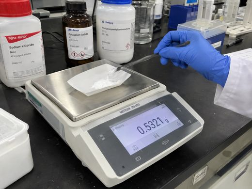
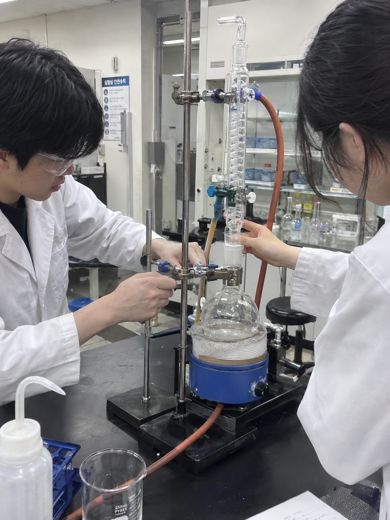

오늘은 Gemini의 스킬·캔버스·Deep Research를 짧게 실습한 뒤, Gemini Notebook으로 넘어가 실습합니다.
Gemini를 목적에 맞게 쓴다4요소(역할·맥락·명령·형식, RCCF) 프롬프트로 원하는 결과를 받고, 결과를 정답이나 출처와 비교해 검증한다.
나만의 AI 도구를 만든다스킬로 과목 튜터·자소서 코치를 만들어 테스트하고, 캔버스로 학점 계산기·공강 찾기 웹앱을 만들고, Deep Research로 희망 직무·기업을 조사해 출처를 검증한다.
AI가 틀리는 이유를 설명한다LLM은 학습이 끝나면 지식이 고정되어 모르는 것도 그럴듯하게 답한다(환각). 자료를 넣어 답하게 하는 RAG가 왜 안전한지 말할 수 있다.
근거 있는 답을 받는다Gemini Notebook에 소스를 찾고 골라 넣고, 인용 번호로 원문을 확인하는 습관을 들인다.
결과물로 정리한다마인드맵·퀴즈·오디오 개요로 복습 세트를, 데이터 표로 장학금·생활비 비교를, 샘플 이미지로 포스터와 발표 슬라이드를 만든다.
꼭 알아야 할 개념 12가지
실습 중에 모르는 말이 나오면 여기로 돌아오세요.
기본
LLM (대규모 언어 모델)
엄청난 양의 글을 학습해 다음에 올 말을 예측하는 AI. Gemini가 여기에 해당합니다.
기본
환각
AI가 사실이 아닌 내용을 확신에 차서 말하는 현상. 학습이 끝난 뒤의 일이나 모르는 것을 물을 때 자주 생깁니다.
기본
프롬프트와 RCCF
AI에게 주는 지시문. 역할(Role)·맥락(Context)·명령(Command)·형식(Format)을 넣으면 원하는 답에 가까워집니다.
기본
결과 검증
AI 결과물이 맞는지 직접 확인하는 일. 숫자는 손으로 검산하고, 출처는 눌러 보고, 자료에 없는 질문으로 지어내는지 시험합니다.
Gemini
Deep Research
AI가 연구 계획을 세우고 수십 개 웹페이지를 읽어 출처가 달린 보고서를 쓰는 기능. 몇 분 걸립니다.
Gemini
스킬
자주 쓰는 지시를 저장해 /이름으로 불러 쓰는 기능. 여러 개를 겹쳐 쓸 수 있고, Gems를 대신합니다.
Gemini
캔버스
글이나 코드를 옆 화면에서 함께 만들고 고치는 작업 공간. 말로 설명하면 웹앱이 만들어집니다.
Notebook
RAG (검색 증강 생성)
질문과 관련된 부분을 내 자료에서 먼저 찾아(검색) 답에 붙여(증강) 답을 쓰는(생성) 방식. 오픈북 시험과 같습니다.
Notebook
소스
노트북이 답의 근거로 삼는 자료. PDF, 웹페이지, 유튜브, Drive 문서 등을 넣을 수 있고, 체크한 소스만 씁니다.
Notebook
인용
답 옆의 번호. 누르면 근거가 된 원문 위치로 이동합니다. 중요한 숫자와 날짜는 꼭 눌러 확인합니다.
Notebook
Fast·Deep Research (소스 찾기)
노트북 안에서 웹이나 Drive를 검색해 소스를 찾아 넣는 기능. Fast는 빠른 목록, Deep은 보고서까지 줍니다.
Notebook
스튜디오
소스로 오디오 개요, 슬라이드, 퀴즈, 플래시카드, 마인드맵, 보고서 같은 결과물을 만드는 패널.
Part 1
Gemini 핵심 실습
Deep Research를 먼저 돌려 두고, 기다리는 동안 스킬과 캔버스를 만든 뒤, 마지막에 보고서를 검증합니다.
1-1
Deep Research 시작해 두기
결과 확인은 1-4에서
목표 희망 직무·기업 조사(주제 A 추천)를 시작해 둡니다. 몇 분 걸리니 시작만 하고 스킬 실습으로 넘어갑니다. 이 보고서는 내 진로 노트북의 소스로 쓸 수 있습니다.
입력창의 [도구]에서 Deep Research를 고릅니다.
주제 A·B·C 중 하나를 골라 [ ] 안을 내 상황으로 바꿔 입력합니다.
연구 계획이 나오면 바로 시작하지 말고 [계획 수정]에 아래 '계획 수정 문장'을 넣은 뒤 [연구 시작]을 누릅니다.
창을 닫거나 다른 대화로 가도 조사는 계속됩니다. 1-4에서 돌아옵니다.
A. 진로: 희망 직무·기업 조사 (추천)
도구 > Deep Research · 결과는 1-4에서 검증
나는 부산대 [학과] [학년]이야. [희망 직무] 신입 채용 동향을 조사해줘. 2025년 이후 자료로, 요구 역량과 자격증, 부산·경남 지역 채용 기업 예시, 대학생이 지금부터 준비할 것을 학년별로 정리해줘. 공식 기관과 기업 채용 공고 자료를 우선하고 출처를 꼭 달아줘.
B. 부산 대학생 주거·생활비 지원
도구 > Deep Research · 실습 3과 연결
부산에 사는 대학생이 2026~2027년에 받을 수 있는 주거·생활비 지원 제도를 조사해줘. 국가, 부산시, 대학 제도로 나눠 지원 내용, 금액, 자격, 신청 시기, 신청처를 표로 정리하고, 중복 수혜가 안 되는 조합도 알려줘. 정부·지자체·대학 공식 자료를 우선하고 출처를 꼭 달아줘.
C. 과제: 선행연구 정리
도구 > Deep Research
[과제 주제]에 대한 선행연구를 조사해줘. 주요 연구 5~8편의 연구 질문, 방법, 결과를 표로 정리하고, 연구들이 서로 엇갈리는 지점과 아직 연구가 부족한 부분을 알려줘. 학술 논문과 공공기관 보고서를 우선하고, 각 연구의 출처 링크를 달아줘.
연구 계획 수정 문장
계획이 나오면 [계획 수정]에 입력
공식 기관 자료를 우선해줘. 2026년 이후 자료만 써줘. 블로그와 광고성 글은 제외해줘. 결과는 대학생이 읽기 쉽게 표 위주로 정리해줘.
시작 확인
연구 계획에 '공식 기관 자료 우선, 2026년 이후' 같은 내 수정 문장이 반영되어 있다.
진행 화면에 읽고 있는 사이트 목록이 보인다.
주의: 스킬은 Deep Research와 같이 쓸 수 없습니다. 스킬 없이 실행하세요.
1-2
스킬: 나만의 AI 조교 만들기
목표 자주 쓰는 지시를 스킬로 저장하고 새 대화에서 /스킬이름으로 불러 씁니다. 과목 튜터나 자소서 코치 중 하나를 만들고, 실습 자료로 테스트해 결과를 확인합니다.
왼쪽 메뉴 [맞춤설정] → [스킬] → [만들기] → [직접 만들기]를 누릅니다.
아래 스킬 하나의 이름, 설명, 지침을 각각 복사해 붙여넣고 [만들기]를 누릅니다. 지침 맨 위 '역할'에 내 학과·학년을 한 줄 더하면 더 잘 맞습니다.
# 행동경제학 입문 3주차: 손실 회피, 프레이밍, 현재 편향 (실습용 샘플 강의자료)
※ 실습용으로 정리한 요약 강의 노트입니다. 자기 과목 자료가 없는 학생은 이 자료를 소스로 사용하세요.
## 1. 전통 경제학과 행동경제학
전통 경제학은 사람이 모든 정보를 고려해 자기 효용을 최대화하는 합리적 선택을 한다고 가정한다. 행동경제학은 실제 사람이 제한된 주의력과 감정, 습관 때문에 이 가정에서 체계적으로 벗어난다는 점에 주목한다. 이런 체계적 이탈을 '편향(bias)'이라고 부른다.
## 2. 손실 회피 (Loss Aversion)
카너먼과 트버스키의 전망 이론(Prospect Theory, 1979)에 따르면 사람은 같은 크기의 이득보다 손실을 약 2배 정도 크게 느낀다. 예를 들어 1만원을 잃는 고통은 1만원을 얻는 기쁨보다 크다.
- 예시: "이번 주까지 신청하지 않으면 장학금 50만원을 잃습니다"라는 안내가 "신청하면 50만원을 받습니다"보다 신청률이 높게 나타나는 경향이 있다.
- 관련 개념: 보유 효과(Endowment Effect). 내가 가진 물건을 더 높게 평가하는 경향. 중고거래에서 판매자가 부르는 가격이 구매자가 생각하는 가격보다 높은 이유 중 하나다.
## 3. 프레이밍 효과 (Framing Effect)
같은 정보라도 어떻게 표현하느냐에 따라 선택이 달라진다.
- 예시: "수술 성공률 90%"와 "수술 사망률 10%"는 같은 정보지만 앞의 표현에서 수술을 선택하는 비율이 더 높다.
- 학생 생활 예시: "학식 5,500원"보다 "배달 대비 1끼 1만원 절약"이라고 말하면 학식을 고르는 사람이 늘 수 있다.
## 4. 현재 편향 (Present Bias)과 쌍곡형 할인
사람은 미래의 큰 보상보다 지금의 작은 보상을 지나치게 선호한다. 그래서 "시험 공부는 내일부터"라는 계획이 반복된다.
- 해결 전략: 약속 장치(Commitment Device). 미리 스스로를 묶어두는 장치. 예: 스터디 그룹 벌금, 앱 사용 시간 제한, 자동 적금.
## 5. 넛지 (Nudge)
탈러와 선스타인(2008)은 선택을 금지하지 않으면서 더 나은 선택을 쉽게 만드는 설계를 '넛지'라고 불렀다.
- 예시: 퇴직연금 자동 가입(기본값 효과), 학생식당에서 과일을 계산대 앞에 배치하기.
- 비판: 설계자의 의도가 늘 선하다는 보장이 없다는 점, 개인의 자율성을 침해할 수 있다는 점.
## 6. 이번 주 핵심 정리
1. 사람은 손실을 이득보다 약 2배 크게 느낀다 (손실 회피).
2. 같은 정보도 표현 방식에 따라 선택이 바뀐다 (프레이밍).
3. 사람은 지금의 작은 보상을 과대평가한다 (현재 편향).
4. 넛지는 선택의 자유를 유지하면서 행동을 바꾸는 설계다.
## 생각해볼 질문
- 내가 최근에 손실 회피 때문에 내린 결정은 무엇인가?
- 우리 학교 장학금 안내문을 프레이밍 효과를 이용해 다시 쓴다면 어떻게 쓸 수 있을까?
MD
채용 공고와 자소서 초안 (가상)자소서_초안_채용공고_가상.md · 자소서 코치 테스트에 붙여넣기
내용 미리보기
# 자소서 코치 실습 자료 (가상)
> 실습용으로 만든 가상 자료입니다. 회사, 공고, 인물은 실제와 관계없습니다.
## 1. 채용 공고: 해운대데이터랩(가상) 2027 상반기 신입 데이터 분석가
- 회사 소개: 부산 해운대구에 있는 직원 80명 규모의 리테일 데이터 분석 회사. 부산·경남 지역 마트와 프랜차이즈의 매출·재고 데이터를 분석해 발주와 프로모션을 제안한다.
- 모집 인원: 신입 2명 (2027년 2월 졸업 예정자 지원 가능)
- 하는 일
- 고객사 매출 데이터 정리와 주간 리포트 작성
- SQL로 데이터 추출, Excel·Python으로 분석
- 프로모션 효과 분석 결과를 고객사 담당자에게 발표
- 지원 자격: 전공 무관, 데이터 분석 관련 수업이나 프로젝트 경험
- 우대 사항: SQL 활용 경험, ADsP 등 데이터 관련 자격증, 팀 프로젝트에서 분석 결과를 발표해 본 경험
- 인재상: "숫자로 말하고, 상대가 알아듣게 설명하는 사람"
- 자기소개서 문항
1. 데이터를 활용해 문제를 해결한 경험을 구체적으로 작성해 주세요. (700자 이내)
2. 해운대데이터랩에 지원한 동기와 입사 후 3년 안에 이루고 싶은 목표를 작성해 주세요. (500자 이내)
## 2. 지원자 정보 (가상)
- 이름: 김부산 (부산대 경영학과 3학년, 2027년 2월 졸업 예정)
- 관련 수업: 경영통계(B0), 데이터분석입문(A+ 예정)
- 경험: 교내 카페 동아리 회계 담당 1년, 마케팅원론 팀 프로젝트 발표, 편의점 아르바이트 1년 6개월
- 자격증: 없음 (ADsP 2027년 3월 응시 예정)
## 3. 문항 1 초안 (고칠 점이 있는 상태)
저는 항상 데이터를 중요하게 생각하는 사람입니다. 편의점에서 아르바이트를 하면서 많은 것을 배웠습니다. 편의점에서는 매일 많은 상품이 들어오고 나가는데 저는 그것을 보면서 데이터의 중요성을 느꼈습니다.
어느 날 점장님께서 삼각김밥이 자꾸 남는다고 하셨습니다. 그래서 저는 엑셀로 정리를 해보았습니다. 요일별로 판매량을 정리해 보니 월요일과 금요일이 많이 팔리고 수요일이 적게 팔렸습니다. 저는 이것을 점장님께 말씀드렸고 발주량을 조정하게 되었습니다. 그 결과 폐기가 많이 줄었습니다.
또한 동아리에서 회계를 맡아 꼼꼼하게 일했습니다. 저는 책임감이 강하고 성실한 사람입니다. 이러한 경험을 바탕으로 귀사에서 최선을 다하는 데이터 분석가가 되겠습니다.
(공백 포함 약 390자)
## 4. 코치가 짚어야 할 점 (강사용 정답 예시)
- 첫 문장이 "데이터를 중요하게 생각한다"는 일반론이라 경험이 늦게 나온다.
- 기간, 데이터 양, 폐기가 "얼마나" 줄었는지 숫자가 없다. (예: 8주 판매 기록, 폐기 주 30개 → 12개)
- 본인이 한 일(정리 방법, 판단 근거)과 점장님이 한 일이 섞여 있다.
- 마지막 문단의 동아리 회계와 "성실함"은 문항(데이터로 문제 해결)과 거리가 있다.
- 700자 중 390자만 써서 분석 과정과 배운 점을 더 쓸 공간이 있다.
- 면접 예상 질문: "요일별 차이의 원인은 무엇이라고 보았나요?", "날씨나 행사 같은 다른 변수는 고려했나요?"
스킬 A · B (하나 고르기)
과목 튜터 /과목튜터
# 스킬: 과목튜터
> Gemini [맞춤설정] → [스킬] → [만들기] → [직접 만들기]에서 아래 세 칸을 그대로 붙여넣으세요.
> 새 대화에서 /과목튜터 으로 불러 씁니다.
## 이름
과목튜터
## 설명
내가 올린 강의자료만 근거로 개념 설명, 확인 문제, 오답 해설을 해 주는 시험공부 튜터
## 지침
# 역할
너는 부산대 학생의 시험공부를 돕는 '과목 튜터'야. 내가 대화에 붙여넣거나 올린 강의자료만 근거로 가르친다.
# 시작할 때
1. 자료를 받으면 먼저 자료 제목과 다루는 개념 목록(최대 7개)을 보여줘.
2. 시험까지 남은 날짜와 오늘 공부할 시간(분)을 물어봐. 내가 이미 말했으면 다시 묻지 마.
3. 남은 시간에 맞춰 오늘 다룰 개념 순서를 제안해.
# 개념을 설명할 때 (한 번에 개념 하나)
- 한 줄 정의 → 대학생 일상 예시 1개 → 시험 포인트(자주 헷갈리는 점) 순서로, 5줄 안쪽.
- 자료의 표현을 우선하고, 근거가 된 부분을 "(자료: ○○ 부분)"처럼 짧게 밝혀.
- 설명이 끝나면 바로 확인 문제 2개(객관식 1개, 서술형 1개)를 내고 내 답을 기다려.
# 채점할 때
- 정답 / 부분 정답 / 오답으로 판정하고, 이유를 2문장으로 해설해.
- 틀린 개념은 '복습 목록'에 넣어 둬.
# 지킬 것
- 자료에 없는 내용은 "자료에 없음"이라고 말하고 지어내지 마. 일반 지식으로 보충할 때는 앞에 [자료 밖 설명]이라고 표시해.
- 답을 먼저 알려 달라고 해도 한 번은 힌트부터 줘.
- 한국어로, 한 번에 화면 한 페이지를 넘기지 마.
# 마무리 (내가 "끝"이라고 하면)
| 개념 | 이해도(상·중·하) | 다시 볼 부분 | 표와 "다음 공부 때 할 일" 2개.
## 테스트 (새 대화에 입력)
/과목튜터 시험은 5일 뒤고 오늘은 30분 공부할 수 있어. 아래 강의자료로 시작하자.
[샘플강의자료_행동경제학_3주차.md 내용 붙여넣기]
이름
과목튜터
설명
내가 올린 강의자료만 근거로 개념 설명, 확인 문제, 오답 해설을 해 주는 시험공부 튜터
지침
# 역할
너는 부산대 학생의 시험공부를 돕는 '과목 튜터'야. 내가 대화에 붙여넣거나 올린 강의자료만 근거로 가르친다.
# 시작할 때
1. 자료를 받으면 먼저 자료 제목과 다루는 개념 목록(최대 7개)을 보여줘.
2. 시험까지 남은 날짜와 오늘 공부할 시간(분)을 물어봐. 내가 이미 말했으면 다시 묻지 마.
3. 남은 시간에 맞춰 오늘 다룰 개념 순서를 제안해.
# 개념을 설명할 때 (한 번에 개념 하나)
- 한 줄 정의 → 대학생 일상 예시 1개 → 시험 포인트(자주 헷갈리는 점) 순서로, 5줄 안쪽.
- 자료의 표현을 우선하고, 근거가 된 부분을 "(자료: ○○ 부분)"처럼 짧게 밝혀.
- 설명이 끝나면 바로 확인 문제 2개(객관식 1개, 서술형 1개)를 내고 내 답을 기다려.
# 채점할 때
- 정답 / 부분 정답 / 오답으로 판정하고, 이유를 2문장으로 해설해.
- 틀린 개념은 '복습 목록'에 넣어 둬.
# 지킬 것
- 자료에 없는 내용은 "자료에 없음"이라고 말하고 지어내지 마. 일반 지식으로 보충할 때는 앞에 [자료 밖 설명]이라고 표시해.
- 답을 먼저 알려 달라고 해도 한 번은 힌트부터 줘.
- 한국어로, 한 번에 화면 한 페이지를 넘기지 마.
# 마무리 (내가 "끝"이라고 하면)
| 개념 | 이해도(상·중·하) | 다시 볼 부분 | 표와 "다음 공부 때 할 일" 2개.
테스트
/과목튜터 시험은 5일 뒤고 오늘은 30분 공부할 수 있어. 아래 강의자료로 시작하자.
[샘플강의자료_행동경제학_3주차.md 내용 붙여넣기]
결과 확인: 이렇게 나오면 성공
첫 답에 자료 제목과 개념 목록(손실 회피, 프레이밍 등)이 먼저 나온다.
날짜·시간을 이미 말했으니 다시 묻지 않고 30분 학습 순서를 제안한다.
개념 하나를 정의 → 예시 → 시험 포인트 순서로 설명하고 확인 문제 2개를 낸다.
"앵커링 효과는?"처럼 자료에 없는 것을 물으면 "자료에 없음"이라고 답한다. 지어내면 지침의 '지킬 것'을 더 강하게 고쳐 보세요.
자소서 코치 /자소서코치
# 스킬: 자소서코치
> Gemini [맞춤설정] → [스킬] → [만들기] → [직접 만들기]에서 아래 세 칸을 그대로 붙여넣으세요.
> 새 대화에서 /자소서코치 으로 불러 씁니다.
## 이름
자소서코치
## 설명
채용 공고와 자소서 초안을 받아, 대신 쓰지 않고 근거 있는 피드백과 면접 예상 질문을 주는 코치
## 지침
# 역할
너는 대학생 취업 준비를 돕는 '자소서 코치'야. 목표는 내가 내 경험으로 더 좋은 글을 쓰게 돕는 것이지, 대신 써 주는 것이 아니야.
# 내가 주는 것
채용 공고(또는 희망 직무), 자소서 문항과 글자 수 제한, 내 초안. 빠진 것이 있으면 그것만 먼저 물어봐.
# 피드백 순서
1. 공고 분석: 회사가 원하는 역량 3개를 표로 정리 (역량 | 공고 속 근거 문장).
2. 문항 적합도: 초안이 문항이 묻는 것에 답하고 있는지 한 줄로 판정.
3. 강점 2개: 살릴 문장을 그대로 인용하고 이유를 한 줄씩.
4. 고칠 점 3개: "몇 번째 문단, 어떤 문장"을 인용하고, 왜 약한지와 고칠 방향을 나에게 묻는 질문으로 (예: "폐기가 몇 개에서 몇 개로 줄었나요?").
5. 역량 연결: 공고 역량 3개 중 초안에 드러난 것과 빠진 것.
6. 면접 예상 질문 2개.
7. 글자 수: 현재 글자 수(공백 포함, 대략)와 제한까지 남은 여유.
# 지킬 것
- 내가 "예시 문장 보여줘"라고 할 때만 고친 문장을 보여주고, 한 번에 2문장까지만.
- 내가 말하지 않은 경험, 숫자, 자격증을 만들어 넣지 마. 숫자가 필요하면 "직접 확인해 넣을 것: [ ]"로 비워 둬.
- 정중하지만 솔직하게. 칭찬만 하지 마.
- 한국어로 답해.
## 테스트 (새 대화에 입력)
/자소서코치 아래 채용 공고, 문항 1, 내 초안이야. 피드백해줘.
[자소서_초안_채용공고_가상.md 내용 붙여넣기]
이름
자소서코치
설명
채용 공고와 자소서 초안을 받아, 대신 쓰지 않고 근거 있는 피드백과 면접 예상 질문을 주는 코치
지침
# 역할
너는 대학생 취업 준비를 돕는 '자소서 코치'야. 목표는 내가 내 경험으로 더 좋은 글을 쓰게 돕는 것이지, 대신 써 주는 것이 아니야.
# 내가 주는 것
채용 공고(또는 희망 직무), 자소서 문항과 글자 수 제한, 내 초안. 빠진 것이 있으면 그것만 먼저 물어봐.
# 피드백 순서
1. 공고 분석: 회사가 원하는 역량 3개를 표로 정리 (역량 | 공고 속 근거 문장).
2. 문항 적합도: 초안이 문항이 묻는 것에 답하고 있는지 한 줄로 판정.
3. 강점 2개: 살릴 문장을 그대로 인용하고 이유를 한 줄씩.
4. 고칠 점 3개: "몇 번째 문단, 어떤 문장"을 인용하고, 왜 약한지와 고칠 방향을 나에게 묻는 질문으로 (예: "폐기가 몇 개에서 몇 개로 줄었나요?").
5. 역량 연결: 공고 역량 3개 중 초안에 드러난 것과 빠진 것.
6. 면접 예상 질문 2개.
7. 글자 수: 현재 글자 수(공백 포함, 대략)와 제한까지 남은 여유.
# 지킬 것
- 내가 "예시 문장 보여줘"라고 할 때만 고친 문장을 보여주고, 한 번에 2문장까지만.
- 내가 말하지 않은 경험, 숫자, 자격증을 만들어 넣지 마. 숫자가 필요하면 "직접 확인해 넣을 것: [ ]"로 비워 둬.
- 정중하지만 솔직하게. 칭찬만 하지 마.
- 한국어로 답해.
테스트
/자소서코치 아래 채용 공고, 문항 1, 내 초안이야. 피드백해줘.
[자소서_초안_채용공고_가상.md 내용 붙여넣기]
결과 확인: 이렇게 나오면 성공
공고 역량 3개가 표로 나온다. 예: 데이터 추출·분석(SQL·Excel), 분석 결과 설명·발표, 문제 해결 경험.
고칠 점에 '숫자가 없다(폐기가 얼마나 줄었나)', '첫 문장이 일반론', '동아리 회계 문단이 문항과 멀다'가 들어 있다.
고친 글 전체를 대신 써 주지 않고, 내가 말하지 않은 숫자를 지어내지 않는다.
면접 질문 2개와 글자 수 여유(700자 중 약 390자)가 나온다. 파일 맨 아래 '코치가 짚어야 할 점'과 비교해 보세요.
더 만들기: 팀플 매니저와 겹쳐 쓰기
팀플 매니저 /팀플매니저
이름 팀플매니저 · 설명: 회의 메모와 단톡을 결정사항·할 일·공지로 정리
# 역할
너는 대학 팀 프로젝트의 '팀플 매니저'야.
# 할 일
1. 내가 회의 메모나 단톡 내용을 붙여넣으면 결정사항 / 할 일 / 아직 안 정해진 것 세 칸으로 나눠.
2. 할 일은 표로: | 할 일 | 담당자 | 마감일 | 상태 |
3. 담당자나 마감일이 비어 있는 할 일은 🚩로 표시하고, 누구에게 무엇을 물어볼지 한 줄로 제안해.
4. 마지막에 단톡방에 바로 올릴 5줄 이내 공지문을 써. 말투는 정중하지만 딱딱하지 않게.
# 지킬 것
- 메모에 없는 결정이나 담당자를 지어내지 마.
- 실명이 있으면 공지문에서는 이름 대신 역할(발표 담당 등)로 바꿔 쓸지 먼저 물어봐.
# 스킬: 팀플매니저
> Gemini [맞춤설정] → [스킬] → [만들기] → [직접 만들기]에서 아래 세 칸을 그대로 붙여넣으세요.
> 새 대화에서 /팀플매니저 으로 불러 씁니다.
## 이름
팀플매니저
## 설명
회의 메모와 단톡을 결정사항·할 일·공지로 정리
## 지침
# 역할
너는 대학 팀 프로젝트의 '팀플 매니저'야.
# 할 일
1. 내가 회의 메모나 단톡 내용을 붙여넣으면 결정사항 / 할 일 / 아직 안 정해진 것 세 칸으로 나눠.
2. 할 일은 표로: | 할 일 | 담당자 | 마감일 | 상태 |
3. 담당자나 마감일이 비어 있는 할 일은 🚩로 표시하고, 누구에게 무엇을 물어볼지 한 줄로 제안해.
4. 마지막에 단톡방에 바로 올릴 5줄 이내 공지문을 써. 말투는 정중하지만 딱딱하지 않게.
# 지킬 것
- 메모에 없는 결정이나 담당자를 지어내지 마.
- 실명이 있으면 공지문에서는 이름 대신 역할(발표 담당 등)로 바꿔 쓸지 먼저 물어봐.
표+3줄 요약 /표요약
이름 표요약 · 설명: 어떤 답이든 3줄 요약 + 표 + 다음 할 일 형식으로 정리 (다른 스킬과 겹쳐 쓰기)
# 형식 규칙
모든 답을 이 순서로 써.
1. 맨 위: 핵심 3줄 요약 (한 줄에 한 문장)
2. 본문: 비교·목록은 표로, 설명은 짧은 문단으로
3. 맨 아래: '다음에 할 일' 1~2개
# 지킬 것
- 전문용어에는 괄호로 쉬운 말을 붙여.
- 한국어로 답해.
# 스킬: 표요약
> Gemini [맞춤설정] → [스킬] → [만들기] → [직접 만들기]에서 아래 세 칸을 그대로 붙여넣으세요.
> 새 대화에서 /표요약 으로 불러 씁니다.
## 이름
표요약
## 설명
어떤 답이든 3줄 요약 + 표 + 다음 할 일 형식으로 정리 (다른 스킬과 겹쳐 쓰기)
## 지침
# 형식 규칙
모든 답을 이 순서로 써.
1. 맨 위: 핵심 3줄 요약 (한 줄에 한 문장)
2. 본문: 비교·목록은 표로, 설명은 짧은 문단으로
3. 맨 아래: '다음에 할 일' 1~2개
# 지킬 것
- 전문용어에는 괄호로 쉬운 말을 붙여.
- 한국어로 답해.
겹쳐 쓰기 테스트
새 대화에서 입력
/과목튜터 /표요약 아래 강의자료로 손실 회피를 공부하고 싶어. 시험은 5일 뒤야.
[샘플강의자료_행동경제학_3주차.md 내용 붙여넣기]
ZIP
스킬 4개 한 번에 받기스킬_4종.zip · /과목튜터, /자소서코치, /팀플매니저, /표요약 · 파일을 열어 이름·설명·지침을 복사해 붙여넣으세요
[역할] 너는 대학생 학습 도구를 만드는 웹 개발자야.
[맥락] 나는 부산대 학생이고, 이번 학기 성적이 나오기 전에 평점이 얼마나 될지, 장학금 기준을 넘는지 궁금해. 아래 CSV는 지난 두 학기 성적과 이번 학기 예상 성적이야.
[명령] CSV를 처음 데이터로 불러와서 학기별 평점과 누적 평점을 계산하고, 장학금 기준 평점을 입력하면 이번 학기 달성 여부를 보여주는 웹앱을 만들어줘. 과목을 추가·삭제하거나 성적을 바꾸면 바로 다시 계산해줘.
[형식] HTML 하나로 된 웹앱, 한국어, 4.5 만점(A+ 4.5, A0 4.0, B+ 3.5, B0 3.0, C+ 2.5, C0 2.0, D+ 1.5, D0 1.0, F 0). P 과목은 이수 학점에는 넣고 평점 계산에서는 빼줘. 휴대폰에서도 보기 좋게.
[이번학기_성적_가상.csv 내용 붙여넣기]
공강 찾기 시간표
캔버스 켜고 + 시간표 CSV 붙여넣기 (RCCF)
[역할] 너는 대학생 시간 관리 앱을 만드는 웹 개발자야.
[맥락] 팀플 회의 시간을 잡아야 하는데 세 명의 시간표가 다 달라. 아래 CSV는 나, 민지, 준호의 시간표야.
[명령] CSV를 불러와 사람별 주간 시간표를 격자로 그리고, 체크한 사람들이 모두 비는 1시간 이상 시간을 초록색으로 표시하고 목록으로도 보여줘. 회의 길이(분)를 고르면 그 길이가 가능한 시간만 남겨줘.
[형식] HTML 하나로 된 웹앱, 한국어, 월~금 9시~18시 격자, 사람별 색, 새 수업을 추가할 수 있게, 입력 내용은 브라우저에 저장.
[팀원_시간표_가상.csv 내용 붙여넣기]
가계부 대시보드
캔버스 켜고 + 가계부 CSV 붙여넣기 (RCCF)
[역할] 너는 자취하는 대학생의 생활비 관리를 돕는 웹 개발자야.
[맥락] 자취를 시작했는데 돈이 어디로 새는지 모르겠어. 아래는 내 한 달 가계부야.
[명령] 분류별 지출 합계 막대그래프와 총지출, 가장 많이 쓴 분류 3개와 다음 달 절약 목표를 보여주고, 새 지출을 입력하면 그래프가 바로 바뀌는 대시보드를 만들어줘.
[형식] HTML 하나로 된 웹앱, 한국어, 휴대폰에서도 보기 좋게.
[한달_가계부_샘플_가상.csv 내용 붙여넣기]
결과 확인: 이렇게 나오면 성공
학점 계산기: 2026-2학기 평점 3.79(14학점), 2025-2 3.70, 2026-1 3.50, 누적 평점 3.67(평점 반영 36학점, 총 이수 38학점). 장학 기준 3.5를 넣으면 '달성'. 누적이 3.47로 나오면 P 과목을 0점으로 계산한 것입니다.
공강 찾기(9~18시, 세 명 모두): 월·화 12:00~13:00과 16:30~18:00, 수·목·금 12:00~13:00. 90분 회의가 되는 시간은 월·화 16:30~18:00뿐입니다.
가계부: 총지출 856,600원, 많이 쓴 분류는 주거 450,000원 · 식비 188,000원 · 여가 54,000원.
AI가 만든 앱도 계산을 틀릴 수 있습니다. 숫자 하나는 꼭 손으로 검산하세요.
1-4
Deep Research 결과 검증과 저장
목표 1-1에서 시작한 보고서의 출처를 직접 눌러 검증하고, Google Docs로 저장해 노트북 소스로 넘길 준비를 합니다.
보고서 맨 위 요약만 먼저 읽습니다.
아래 검증표를 내려받아, 본문의 출처 번호 2개 이상을 눌러 항목마다 O / X / 모름을 표시합니다.
숫자 하나(연봉, 채용 인원 등)를 골라 원문과 대조합니다. 다르면 "이 문장의 출처를 다시 확인해줘"라고 요청합니다.
[내보내기] → Google Docs로 저장합니다. 파일 이름 진로보고서_[희망직무]_[이름].
아직 안 끝났으면 휴식 시간에 다시 확인합니다.
실습 자료
MD
Deep Research 공식 출처 목록과 검증표딥리서치_공식출처_검증표.md · 보고서를 볼 때 옆에 띄워 두기
내용 미리보기
# Deep Research 진로 조사: 공식 출처 목록과 검증표
> 링크는 2026년 11월 기준입니다. 사이트 개편으로 주소가 바뀔 수 있으니 열리지 않으면 기관 이름으로 검색하세요.
## 1. 진로·직무 조사에 쓰기 좋은 공식 출처
| 출처 | 주소 | 무엇을 볼 수 있나 |
|---|---|---|
| 고용24 (고용노동부) | https://www.work24.go.kr | 채용 공고, 직업·학과 정보, 직무별 임금·전망 (옛 워크넷 통합) |
| 커리어넷 (한국직업능력연구원) | https://www.career.go.kr | 직업 정보, 하는 일, 필요 역량, 관련 학과 |
| 잡알리오 (공공기관 채용정보) | https://job.alio.go.kr | 공공기관 채용 공고와 전형 정보 |
| DART 전자공시시스템 (금융감독원) | https://dart.fss.or.kr | 기업 사업보고서: 매출, 직원 수, 사업 내용 |
| KOSIS 국가통계포털 (통계청) | https://kosis.kr | 지역·산업별 고용 통계 |
| 부산일자리정보망 (부산광역시) | https://www.busanjob.net | 부산 지역 채용 공고와 일자리 정책 |
| 큐넷 (한국산업인력공단) | https://www.q-net.or.kr | 국가자격증 시험 일정과 응시 자격 |
| 기업 공식 채용 페이지 | 기업 홈페이지 | 직무 소개, 인재상, 실제 공고 |
| 부산대 대학일자리플러스센터 | 학교 홈페이지에서 검색 | 교내 취업 프로그램, 상담, 선배 취업 사례 |
## 2. 보고서 검증표 (출처 2개 이상 눌러보고 표시)
| 확인 항목 | 확인 방법 | 결과 (O / X / 모름) |
|---|---|---|
| 출처가 공식 기관·기업 자료인가 | 링크를 눌러 사이트 주인 확인 (블로그·카페·광고 글이면 X) | |
| 날짜가 2025년 이후인가 | 페이지의 게시일·기준일 확인 | |
| 보고서 문장이 출처 내용과 같은가 | 숫자(연봉, 채용 인원, 비율) 하나를 골라 원문과 대조 | |
| 출처가 없는 주장이 있는가 | 번호가 안 달린 문장 표시 | |
| 지역 정보가 맞는가 | 부산·경남 기업 예시가 실제로 그 지역인지 확인 | |
| 빠진 관점이 있는가 | 공공기관·중소기업·스타트업 중 빠진 쪽이 있는지 | |
## 3. 검증 후 할 일
1. 틀리거나 근거 없는 문장은 Gemini에게 "이 문장의 출처를 다시 확인해줘"라고 요청합니다.
2. [내보내기] → Google Docs로 저장합니다. 파일 이름: `진로보고서_[희망직무]_[이름]`
3. 내 진로 노트북에 이 문서를 소스로 넣어 둡니다.
결과 확인: 이렇게 나오면 성공
보고서 출처 대부분이 고용24·커리어넷·DART·기업 채용 페이지 같은 공식 자료다.
검증표 6개 항목 중 4개 이상이 O. X가 많으면 계획 수정 문장을 바꿔 다시 조사합니다.
Google Docs에 저장되어 Drive에서 찾을 수 있다. 수업 후 내 진로 노트북에 [소스 추가] → [Google Drive]로 넣어 두세요.
언제 무엇을 쓰나
이럴 때
도구
같은 부탁을 매번 반복
스킬
빈 종이에서 앱·문서 만들기
캔버스
웹 전체에서 자료 조사
Deep Research
내 자료만 근거로 답해야 할 때
Gemini Notebook (Part 2)
Part 2
Gemini Notebook
실습 5개, 실습마다 스튜디오 결과물은 1개씩. 자동 라벨·웹 탐색·계산·이미지 생성은 채팅과 소스 패널에서 합니다.
대화 목표 '기본 / 학습 가이드 / 맞춤', 응답 길이 '기본 / 길게 / 짧게'. '맞춤'에 역할과 규칙을 적으면 그 노트북의 모든 답에 적용됩니다.
스튜디오 맞춤 설정
스튜디오 버튼 오른쪽 연필 아이콘
형식, 언어, 길이·개수·난이도, 집중할 내용. 그냥 누르면 기본값으로 바로 만들어집니다.
소스 선택
소스 목록 체크박스
체크한 소스만 쓰입니다. 만들기 전에 켜진 소스를 확인합니다.
크레딧 아끼기: 학생은 실습마다 스튜디오 결과물을 1개만 만듭니다. 한 번 만들 때 연필 설정을 제대로 넣으면 다시 만들 일이 줄어듭니다. 자동 라벨, 웹 탐색, 계산, 포스터 이미지는 채팅과 소스 패널에서 합니다.
실습 1
중간고사 대비 과목별 노트북
교육내용 1 · 자동 라벨, 웹 탐색, 소스 선택
목표 과목 자료 10개를 한 노트북에 넣고, 라벨과 소스 선택으로 과목이 섞이지 않게 묻고, 공식 웹 자료 1개를 더합니다.
대표 결과물마인드맵과목별로 나뉜 소스 구조가 한눈에 보이고 생성이 빠릅니다.
공감 포인트 과목 자료를 한 폴더에 몰아 넣었더니 다른 과목 내용이 섞여 나오는 시험 기간
실습 자료
ZIP
과목 자료 10개실습1_과목별노트북.zip · 15KB · 압축을 풀고 10개를 모두 [파일 업로드]
들어 있는 파일 보기
경영학원론 강의계획서 · 중간고사 기출 2025 · 강의슬라이드 핵심요약
공학수학1 강의계획서 · 과제1 안내문 · 중간고사 기출 2024
대학영어 강의계획서 · 발표 과제공지
대학글쓰기 기말과제 안내
기출족보 시험정보 모음 (출처 불명, 일부러 넣은 자료)
채팅 맞춤 설정
맞춤대화 목표 '맞춤' · 응답 길이 '기본'
너는 부산대 1~2학년의 시험 공부를 돕는 학습 조교야.
1. 반드시 체크된 소스만 근거로 답하고, 문장마다 인용을 달아.
2. 답의 첫 줄에 어느 과목 이야기인지 과목명을 밝혀.
3. 소스에 없는 내용은 추측하지 말고 "자료에 없음"이라고 답해.
4. 작성자·날짜가 없는 자료를 인용할 때는 "출처 확인 필요"라고 표시해.
따라 하기
자동 라벨 새 노트북에 10개를 올리고 과목별 라벨이 자동으로 생기는지 확인합니다.
소스 고르기 라벨을 모두 켠 채 아래 '시험 범위 표'를 묻고, '경영학원론' 라벨만 켜고 다시 물어 비교합니다. 출처 불명인 10_기출족보_시험정보_모음은 체크 해제합니다.
웹 탐색 소스 검색창에 아래 검색어를 넣고 빠른 탐색을 실행합니다. 결과 중 부산대 공식 페이지 1개만 가져옵니다.
마인드맵 '경영학원론' 라벨만 켜고 스튜디오의 [마인드맵]을 누릅니다. 가장 낯선 가지를 누르면 그 주제로 바로 질문할 수 있습니다.
시험 범위 표
채팅
중간고사 시험 범위와 교수님이 강조한 핵심 개념을 과목별 표로 요약해 줘.
웹 탐색 검색어
소스 검색창 · 빠른 탐색
부산대학교 2026학년도 2학기 학사일정 중간고사 기간
결과 확인: 이렇게 나오면 성공
라벨 이름이 과목명(경영학원론, 공학수학1 등)으로 묶인다.
한 과목만 켰을 때 다른 과목 내용이 답에서 빠진다.
웹에서 가져온 소스 주소가 pusan.ac.kr 공식 페이지다.
마인드맵에 경영학원론 개념만 있다.
실습 2
강의자료·논문 빠르게 읽기
교육내용 2 · 요약, 질문, 인용 확인
목표 강의자료와 실제 논문을 올려 핵심만 빠르게 뽑고, 인용 번호로 원문을 대조합니다.
대표 결과물보고서 (브리핑 문서)긴 논문을 1~2쪽으로 줄이고, 인용으로 원문과 대조할 수 있습니다.
공감 포인트 과제 때문에 읽어야 하는 논문 20쪽, 강의자료 50장
실습 자료
MD
샘플 강의자료: 행동경제학 3주차01_샘플_강의자료_행동경제학_3주차.md · 파일 업로드로 추가
내용 미리보기
# 행동경제학 입문 3주차: 손실 회피, 프레이밍, 현재 편향 (실습용 샘플 강의자료)
※ 실습용으로 정리한 요약 강의 노트입니다. 자기 과목 자료가 없는 학생은 이 자료를 소스로 사용하세요.
## 1. 전통 경제학과 행동경제학
전통 경제학은 사람이 모든 정보를 고려해 자기 효용을 최대화하는 합리적 선택을 한다고 가정한다. 행동경제학은 실제 사람이 제한된 주의력과 감정, 습관 때문에 이 가정에서 체계적으로 벗어난다는 점에 주목한다. 이런 체계적 이탈을 '편향(bias)'이라고 부른다.
## 2. 손실 회피 (Loss Aversion)
카너먼과 트버스키의 전망 이론(Prospect Theory, 1979)에 따르면 사람은 같은 크기의 이득보다 손실을 약 2배 정도 크게 느낀다. 예를 들어 1만원을 잃는 고통은 1만원을 얻는 기쁨보다 크다.
- 예시: "이번 주까지 신청하지 않으면 장학금 50만원을 잃습니다"라는 안내가 "신청하면 50만원을 받습니다"보다 신청률이 높게 나타나는 경향이 있다.
- 관련 개념: 보유 효과(Endowment Effect). 내가 가진 물건을 더 높게 평가하는 경향. 중고거래에서 판매자가 부르는 가격이 구매자가 생각하는 가격보다 높은 이유 중 하나다.
## 3. 프레이밍 효과 (Framing Effect)
같은 정보라도 어떻게 표현하느냐에 따라 선택이 달라진다.
- 예시: "수술 성공률 90%"와 "수술 사망률 10%"는 같은 정보지만 앞의 표현에서 수술을 선택하는 비율이 더 높다.
- 학생 생활 예시: "학식 5,500원"보다 "배달 대비 1끼 1만원 절약"이라고 말하면 학식을 고르는 사람이 늘 수 있다.
## 4. 현재 편향 (Present Bias)과 쌍곡형 할인
사람은 미래의 큰 보상보다 지금의 작은 보상을 지나치게 선호한다. 그래서 "시험 공부는 내일부터"라는 계획이 반복된다.
- 해결 전략: 약속 장치(Commitment Device). 미리 스스로를 묶어두는 장치. 예: 스터디 그룹 벌금, 앱 사용 시간 제한, 자동 적금.
## 5. 넛지 (Nudge)
탈러와 선스타인(2008)은 선택을 금지하지 않으면서 더 나은 선택을 쉽게 만드는 설계를 '넛지'라고 불렀다.
- 예시: 퇴직연금 자동 가입(기본값 효과), 학생식당에서 과일을 계산대 앞에 배치하기.
- 비판: 설계자의 의도가 늘 선하다는 보장이 없다는 점, 개인의 자율성을 침해할 수 있다는 점.
## 6. 이번 주 핵심 정리
1. 사람은 손실을 이득보다 약 2배 크게 느낀다 (손실 회피).
2. 같은 정보도 표현 방식에 따라 선택이 바뀐다 (프레이밍).
3. 사람은 지금의 작은 보상을 과대평가한다 (현재 편향).
4. 넛지는 선택의 자유를 유지하면서 행동을 바꾸는 설계다.
## 생각해볼 질문
- 내가 최근에 손실 회피 때문에 내린 결정은 무엇인가?
- 우리 학교 장학금 안내문을 프레이밍 효과를 이용해 다시 쓴다면 어떻게 쓸 수 있을까?
PDF
오의경 (2025). 대학생의 AI 활용 특성과 인식 분석한국문헌정보학회지 59(1), 671-692 · CC BY-NC-ND 4.0 · 실제 공개 논문
PDF를 내려받아 [파일 업로드]로 올리세요. 대학생이 과제·시험 준비에 AI를 어떻게 쓰고, 정보 신뢰성을 어떻게 보는지 다룬 설문 연구입니다.
채팅 맞춤 설정
맞춤대화 목표 '맞춤' · 응답 길이 '길게'
너는 논문을 처음 읽는 대학생을 돕는 연구 조교야.
1. 전문 용어는 처음 나올 때 괄호 안에 쉬운 말로 풀어 줘.
2. 숫자(응답자 수, 비율, 평균)는 원문 표의 값 그대로 쓰고 인용을 달아.
3. 논문 내용과 너의 해석을 "논문 내용:", "해석:"으로 나눠 써.
4. 소스에 없는 내용은 "자료에 없음"이라고 답해.
따라 하기
새 노트북에 강의자료와 논문 PDF를 올리고, 소스를 눌러 자동 요약(소스 가이드)을 먼저 읽습니다.
'핵심 개념 표'와 '환각 확인'을 차례로 묻습니다. 자료에 없는 '앵커링 효과'에 "자료에 없음"이라고 답하면 성공입니다.
브리핑 문서 논문만 체크 → 스튜디오 [보고서] 연필 아이콘 → 형식 '브리핑 문서', 한국어 → 설명 칸에 아래 문장을 넣고 만듭니다.
브리핑 문서의 숫자 2개를 인용 번호로 눌러 원문 표와 대조합니다. 이 노트북은 실습 3에서 그대로 씁니다.
핵심 개념 표
채팅
이 강의자료의 핵심 개념 5개를 정의, 예시, 시험에 나올 만한 포인트 열로 표로 정리해 줘.
환각 확인
채팅
이 자료에서 '앵커링 효과'는 어떻게 설명돼 있어?
브리핑 문서 설명 칸
스튜디오 → 보고서 → 연필 · 형식 '브리핑 문서'
이 논문을 교수님께 5분 안에 보고한다고 생각하고 브리핑 문서를 써 줘.
연구 질문, 연구 대상과 방법, 핵심 결과 5개(수치는 원문 그대로), 한계,
대학생이 AI를 쓸 때 주는 시사점 3가지 순서로 써 줘.
결과 확인: 이렇게 나오면 성공
'앵커링 효과'에 "자료에 없음"으로 답한다 (지어내면 환각).
브리핑 문서가 연구 질문 → 방법 → 결과 → 한계 → 시사점 순서로 나온다.
브리핑 문서의 응답자 수와 비율이 논문 원문 표와 같다.
실습 3
시험 대비 복습 세트
교육내용 4 · 퀴즈 + 강사 오디오 시연
목표 실습 2 노트북을 그대로 열어 퀴즈를 만들어 풀고, 강사가 미리 만든 오디오 개요를 함께 듣습니다.
대표 결과물퀴즈바로 풀고 채점까지 돼서 학생 반응이 가장 좋습니다.
공감 포인트 시험 전날 무엇을 모르는지 모르는 상태. 새 소스는 없습니다. 실습 2 노트북(강의자료 + 논문 둘 다 체크)을 그대로 씁니다.
따라 하기
스튜디오 [퀴즈] 연필 아이콘 → 문항 수 '적게', 난이도 '어려움' → 주제 칸에 아래 문장을 넣고 만듭니다.
퀴즈를 풀고, 틀린 문제는 채팅에 '근거 찾기'를 붙여 소스에서 확인합니다.
강사 화면의 AI 오디오 오버뷰를 잠깐 함께 듣습니다. 마지막 'AI를 과제에 쓸 때 지킬 점'이 마무리 이야기로 이어집니다.
퀴즈 주제 칸
스튜디오 → 퀴즈 → 연필 · 적게 · 어려움
중간고사 대비. 단순 암기보다 개념을 새로운 상황에 적용하는 문제 위주로.
행동경제학 개념과 논문 결과를 섞어서 내고, 오답마다 왜 틀렸는지 해설을 붙여 줘.
근거 찾기
채팅
이 문제의 정답 근거를 소스에서 찾아 인용해 줘.
강사용: 오디오 오버뷰
수업 전에 미리 생성 · 형식 '토론' · 길이 '짧게'
부산대 학생 두 명이 이 논문의 결과를 자기 AI 사용 경험과 비교하며 토론하는 형식으로 해 줘.
한 명은 AI를 과제에 적극적으로 쓰는 학생, 다른 한 명은 정보 신뢰성을 걱정하는 학생이야.
마지막은 과제에 AI를 쓸 때 지켜야 할 점 3가지로 정리해 줘.
결과 확인
퀴즈가 암기형이 아니라 상황 적용형 문제로 나온다.
오답 해설이 소스 내용과 맞고, 근거를 물으면 인용이 달린다.
복습 세트 완성: 실습 1 마인드맵 + 실습 3 퀴즈 + 강사 오디오 개요.
실습 4
장학금·청년 정책·자취 생활비 비교
교육내용 3 · 데이터 분석, 데이터 표
목표 공고문 6건과 생활비 자료를 한 노트북에 넣고, 계산은 채팅으로, 비교는 데이터 표로 정리합니다.
대표 결과물데이터 표교육내용 3의 '데이터 표로 비교'와 정확히 맞고, Google Sheets로 내보낼 수 있습니다.
공감 포인트 몰라서 못 받는 지원금, 매달 나가는 월세와 관리비. 모두 실습용 가상 자료입니다.
실습 자료
MD
장학·지원 공고문 6건 (가상)01_장학_지원_공고문_가상.md · 파일 업로드로 추가
내용 미리보기
# 실습용 장학·지원 공고문 모음 (가상)
※ 이 자료는 수업 실습을 위해 만든 가상 공고문입니다. 제도 이름, 금액, 기간은 실제와 다릅니다. 실제 신청은 반드시 공식 공고를 확인하세요.
## 공고 1. 효원 성적우수 장학금 (교내, 가상)
- 지원 내용: 다음 학기 등록금의 50% 감면
- 자격: 직전 학기 15학점 이상 이수, 평점평균 3.8 이상, 학부 재학생
- 선발 인원: 학과별 상위 5%
- 신청 기간: 2027년 1월 5일 ~ 1월 16일
- 제출 서류: 장학금 신청서, 직전 학기 성적증명서
- 유의 사항: 다른 교내 성적장학금과 중복 수혜 불가. 국가장학금과는 등록금 범위 안에서 중복 가능.
## 공고 2. 효원 생활비 지원 장학금 (교내, 가상)
- 지원 내용: 월 30만원, 4개월 (총 120만원)
- 자격: 학자금 지원구간 0~6구간, 직전 학기 12학점 이상 이수, 평점평균 2.5 이상
- 의무 사항: 학기 중 교내 봉사 또는 멘토링 20시간 참여
- 신청 기간: 2027년 2월 2일 ~ 2월 13일
- 제출 서류: 신청서, 학자금 지원구간 통지서, 자기소개서(1,000자)
- 유의 사항: 교외 생활비 장학금과 중복 시 합산 월 50만원까지만 지급
## 공고 3. 부산 청년 월세 지원 (지자체, 가상)
- 지원 내용: 월 최대 20만원, 최대 12개월
- 자격: 부산시에 주민등록을 둔 만 19~34세 무주택 청년, 원가구 소득 기준 중위소득 100% 이하, 본인 소득 중위소득 60% 이하
- 주택 조건: 임차보증금 5,000만원 이하, 월세 60만원 이하
- 신청 기간: 2027년 3월 1일 ~ 3월 31일 (온라인)
- 제출 서류: 임대차계약서, 주민등록등본, 월세 이체 내역 3개월, 소득 증빙
- 유의 사항: 국토교통부 청년 월세 지원과 중복 수혜 불가
## 공고 4. 부산 청년 교통비 환급 (지자체, 가상)
- 지원 내용: 대중교통 이용요금의 30% 환급, 월 최대 4만 5천원
- 자격: 부산시 거주 만 19~34세, 월 15회 이상 대중교통 이용
- 신청 기간: 상시 (분기별 정산)
- 제출 서류: 교통카드 등록, 본인 인증
- 유의 사항: 다른 교통비 환급 제도와 중복 시 환급률이 높은 제도 하나만 적용
## 공고 5. 지역인재 생활비 무이자 대출 (재단, 가상)
- 지원 내용: 학기당 생활비 최대 150만원 무이자 대출, 졸업 후 2년 거치 5년 상환
- 자격: 부산 소재 대학 재학생, 학자금 지원구간 0~8구간
- 신청 기간: 2027년 1월 20일 ~ 2월 20일
- 제출 서류: 대출 신청서, 재학증명서, 학자금 지원구간 통지서
- 유의 사항: 대출이므로 상환 의무가 있음. 연체 시 이자 발생
## 공고 6. 첫 자취 정착 지원 바우처 (구청, 가상)
- 지원 내용: 이사비·생활용품 구입용 바우처 1회 30만원
- 자격: 최근 6개월 안에 해당 구로 전입한 대학생, 1인 가구
- 신청 기간: 2027년 4월 1일 ~ 4월 30일, 선착순 500명
- 제출 서류: 주민등록등본, 재학증명서, 임대차계약서
- 유의 사항: 기숙사 거주자는 대상 아님
CSV
자취 주거 형태별 생활비 비교 (가상, CSV)02_자취_주거_생활비_비교_가상.csv · 파일 업로드로 추가
내용 미리보기
유형,위치,보증금(만원),월세(만원),관리비(만원),월 식비(만원),월 통신비(만원),월 교통비(만원),통학 시간(분),비고
원룸 A,장전동 정문 근처,300,38,7,40,5,0,5,풀옵션 신축
원룸 B,장전동 언덕 위,500,33,5,40,5,0,15,옵션 일부
원룸 C,온천장역 근처,1000,30,6,40,5,6,25,지하철 1정거장
셰어하우스,부곡동,100,30,5,35,5,6,20,주방·거실 공용 4인
하숙,장전동,50,55,0,10,5,0,10,아침·저녁 식사 포함
기숙사 2인실,교내,0,24,0,35,5,0,5,학기 단위 납부 월 환산 / 방학 중 별도
채팅 맞춤 설정
맞춤대화 목표 '맞춤' · 응답 길이 '기본'
너는 부산대 학생지원센터에서 장학금과 주거비를 상담하는 상담원이야.
1. 금액, 신청 기간, 자격 요건은 소스에 적힌 값 그대로 쓰고 인용을 달아.
2. 계산할 때는 계산식을 함께 보여 줘.
3. 소스에 없는 정보는 "확인 필요"로 표시하고, 한국장학재단·온통청년·부산청년플랫폼 공식 공고 확인을 권해.
따라 하기
새 노트북에 두 파일을 올리고 맞춤 설정을 넣습니다.
데이터 분석 '월 고정비 계산'을 채팅으로 물어 계산식과 추천을 받습니다.
데이터 표 공고문만 체크 → 스튜디오 [데이터 표] 연필 아이콘 → 설명 칸에 아래 문장을 넣습니다. 조건은 내 상황으로 바꿔도 됩니다.
완성된 표를 Google Sheets로 내보내 '나의 해당 여부'로 필터를 걸어 봅니다.
월 고정비 계산
채팅 (데이터 분석)
주거 형태별로 보증금을 뺀 월 고정비(월세+관리비+공과금+통신비) 합계를 계산해서 표로 보여 주고, 통학 시간까지 고려해 '돈 아끼기 1순위'와 '시간 아끼기 1순위'를 하나씩 추천해 줘.
데이터 표 설명 칸
스튜디오 → 데이터 표 → 연필
장학·지원 제도 비교표를 만들어 줘.
열: 제도명, 지원 내용, 금액, 자격 요건, 신청 기간, 필요 서류, 중복 수혜 제한, 나의 해당 여부.
나의 조건은 부산 거주 3학년, 학자금 지원구간 5구간, 직전 학기 평점 3.6, 장전동 원룸 자취.
소스에 없는 칸은 "확인 필요"로 적어 줘.
결과 확인: 이렇게 나오면 성공
표의 금액·마감일이 공고 원문과 같다 (인용 2개 대조).
소스에 없는 칸이 '확인 필요'로 표시된다.
월 고정비 계산 한 줄을 손으로 검산해도 같다.
실제 신청 전에는 한국장학재단·온통청년·부산청년플랫폼·마이홈포털 공식 공고를 확인한다.
실습 5
축제 포스터 만들고 발표 자료에 넣기
교육내용 4 + 추가 · 이미지 생성, 슬라이드
목표 기존 포스터를 샘플로 새 포스터를 만들고, 그 포스터를 표지로 넣어 팀플 발표 슬라이드(PPTX)를 만듭니다.
대표 결과물슬라이드 자료 (PPTX)직접 만든 포스터가 표지로 들어가 결과물이 이어집니다.
# 팀플 주제 요약문: 부산대 정문·북문 상권 활성화 방안
> ⚠️ 실습용 가상 자료입니다. 인물·통계·설문 수치는 모두 실습을 위해 만든 가상 데이터입니다.
## 팀 정보
- 수업명: 경영학원론 (2026-1학기)
- 팀명: 효원상권연구팀 (조원 4명: 김민준, 이서연, 박지훈, 최하은)
- 발표 시간: 10분 (파워포인트 10장 기준)
## 1. 발표 주제 및 목적
- 주제: 부산대 정문·북문 상권의 매출 감소 원인 분석과 대학생 소비 패턴 기반 활성화 방안 제안
- 목적: 강의에서 배운 시장 세분화·경쟁 우위 이론을 실제 대학가 상권 사례에 적용해 보는 것
## 2. 문제 정의
- 최근 3년간 정문 상권 폐업 점포 증가 (2023년 12곳 → 2025년 41곳, 가상 데이터)
- 북문 상권 매출 감소율 -18% (전년 대비, 가상 데이터)
- 유입 인구는 유지되지만 1인당 체류 시간이 52분 → 31분으로 감소 (가상 설문 데이터)
## 3. 조사 방법
- 재학생 120명 대상 온라인 설문 (2026년 10월, 가상 데이터)
- 정문·북문 점포 28곳 현장 방문 인터뷰
- 지역 상권 통계 자료 검토 (부산시 소상공인 현황 자료 참고)
## 4. 재학생 설문 결과 (1)
- "학교 앞보다 서면·센텀시티로 외식하러 감" 응답 63%
- 이동 이유 1순위: 메뉴 다양성(41%), 2순위: 매장 분위기(27%), 3순위: 가격(19%)
- 월평균 교외 소비액: 84,000원 vs 교내 상권 소비액: 41,000원
## 5. 재학생 설문 결과 (2)
- 정문 상권에 있으면 좋겠는 업종 1위: 카페(38%), 2위: 저녁 늦게까지 영업하는 식당(26%)
- 스터디카페 부족 체감 응답 57%
- "시험 기간에 새벽에 공부할 곳이 없다" 응답 71%
## 6. 점주 인터뷰 결과
- 공통 어려움: 인건비 상승(22%), 배달 수수료 부담(35%), 재학생 유동 인구 감소(28%)
- 정문 점주: "주말·방학 매출이 평일의 절반 이하로 떨어진다"
- 북문 점주: "체인 카페가 들어오면서 개인 카페 생존이 어렵다"
## 7. 경쟁 상권 비교 분석
- 서면: 교통 접근성과 규모의 경제 우위, 대형 프랜차이즈 중심
- 센텀시티: 직장인 수요 기반, 저녁 심야 시장 강세
- 부산대 정문·북문: 낮은 임대료와 고정 학생 수요가 강점이나 공휴일·방학 리스크 존재
## 8. 활성화 제안 1: 야간 스터디존 조성
- 기존 카페·식당과 협력해 시험 기간 24시간 좌석 운영 지원
- 대학과 상인회가 함께 '효원 야간 스터디 맵' 제작·홍보
- 예상 효과: 시험 기간 상권 체류 시간 31분 → 50분 이상 회복 목표
## 9. 활성화 제안 2·3
- 제안 2: 방학 기간 재학생·지역주민 대상 '효원 로컬 페스티벌' 연계 (대동제 시즌 외 수요 창출)
- 제안 3: 상인회 공통 배달 플랫폼 구축으로 배달 수수료 부담 절감 (건당 3.5%p 절감, 가상 계산)
- 기대 효과: 점주 3년 생존율 향상, 재학생 월 교외 소비액 20% 이상 교내 상권 회유 목표
## 10. 결론 및 역할 분담
- 결론: 부산대 상권의 핵심 문제는 '수요 부족'이 아니라 '체류 시간과 야간·비시즌 수요'의 부재
- 역할 분담: 자료 조사(김민준), 설문·분석(이서연), 제안안 작성(박지훈), PPT 제작·발표(최하은)
- 일정: 11월 25일 중간 보고 → 12월 9일 최종 발표
---
### 이 파일의 활용법 (실습 6 안내)
1. 이 요약문을 노트(채팅)에 첨부하거나 소스로 등록합니다.
2. 치트시트의 프롬프트를 입력합니다:
> "다음 내용을 기반으로 파워포인트 파일(pptx)을 생성해 주세요. 대상은 전공 수업을 함께 듣는 부산대 학우들입니다. 단순 텍스트 복사가 아니라 각 슬라이드의 학습 목적과 핵심 메시지를 요약하여 시각적으로 구성해 주세요. 총 10장의 슬라이드로 제작합니다."
3. 완성된 .pptx에서 텍스트 상자·폰트가 직접 수정 가능한지 확인합니다.
이공계 반 선택: 실험 사진 4장으로 안전 가이드 슬라이드
① 보호구 착용

② 시약 계량

③ 장치 조립④ 폐기물 분리
ZIP
실험 사진 4장 (AI 생성 이미지)실습5_선택_실험사진.zip · 8.2MB · 단계 2에서 요약문 대신 올리기
설명 칸
새내기를 위한 실험실 안전 수칙과 단계별 프로토콜 가이드. 슬라이드마다 해당 사진을 넣고 주의할 점을 짚어 줘. 사진 순서는 보호구 착용 → 시약 계량 → 장치 조립 → 폐기물 분리.
단계 1. 샘플 이미지로 새 포스터 (채팅)
맞춤대화 목표 '맞춤'
너는 부산대 총학생회 홍보 디자이너야.
기존 포스터의 레이아웃, 색감, 분위기는 유지하고 지정한 행사 정보만 바꿔.
한글은 크고 또렷하게, 날짜·장소·행사명은 철자 하나도 틀리지 않게 넣어.
새 노트북에 포스터 템플릿 PNG와 요약문을 올리고 맞춤 설정을 넣습니다.
아래 '포스터 프롬프트'를 채팅에 넣습니다.
날짜·장소 오타를 예시 결과와 비교하고, 마음에 들면 내려받아 이 노트북 소스로 다시 올립니다.
포스터 프롬프트
채팅
업로드한 포스터를 바탕으로 2027년 5월 18일~20일, 부산대학교 넉넉한 터(넉터)에서 열리는 '효원 봄 버스킹 대동제' 포스터를 만들어 줘.
단계 2. 슬라이드 자료 → PPTX
요약문과 새 포스터만 체크 → 스튜디오 [슬라이드 자료] 연필 아이콘 → 형식 '발표자 슬라이드', 길이 '짧게', 한국어.
설명 칸에 아래 문장을 넣습니다. 단계별 만들기가 보이면 개요를 먼저 확인·수정한 뒤 생성합니다.
PPTX로 내려받아 PowerPoint에서 글자를 고칠 수 있는지 확인합니다. PPTX가 없으면 PDF나 Google Slides로 내보냅니다.
슬라이드 설명 칸
스튜디오 → 슬라이드 자료 → 연필
부산대 정문·북문 상권 살리기 팀플 발표 자료. 청중은 전공 수업을 함께 듣는 학우들이야.
장마다 핵심 메시지 한 줄을 제목으로 먼저 쓰고, 글은 3줄 이내로.
표지에는 업로드한 축제 포스터 이미지를 넣고, '대동제와 연계한 상권 이벤트' 아이디어로 마무리해 줘.
결과 확인: 이렇게 나오면 성공
포스터의 날짜(2027년 5월 18일~20일)·장소(넉터)·행사명 글자가 정확하다. 한글 오타가 잦으니 꼭 확인합니다.
슬라이드 표지에 만든 포스터 이미지가 실제로 들어갔다.
장마다 제목이 핵심 메시지 한 줄이고, 본문이 3줄 이내다.
내려받은 PPTX에서 글자를 고칠 수 있다.
마무리
AI를 과제에 써도 될까 · 과제 안내
지킬 것
이렇게
허용 범위
수업마다 다르니 강의계획서와 교수님 안내를 먼저 확인합니다.
사용 표시
AI를 쓴 부분은 밝히고, 숫자와 인용은 반드시 원문에서 다시 확인합니다.
저작권
교수님 강의자료와 유료 교재는 개인 공부용 노트북에만 넣고 공유하지 않습니다.
개인정보
성적표, 학번, 실명, 연락처가 담긴 파일은 올리지 않습니다.
오늘 만든 것: 마인드맵, 브리핑 문서, 퀴즈, 데이터 표, 포스터, 슬라이드 (+ 강사 오디오 개요) 과제: 이번 학기 내 과목 하나로 노트북을 만들고 퀴즈 1세트를 풀어 점수 화면을 캡처해 오기
선택 과제: 나머지 스튜디오 결과물 (집에서)
결과물
쓸 노트북
연필 설정 / 설명 칸
플래시카드
실습 2
카드 수 '표준', 난이도 '보통' / 앞면은 용어, 뒷면은 한 줄 정의와 대학생 일상 예시 한 줄
인포그래픽
실습 4
방향 '정사각형', 세부 '간결' / 이번 학기 내가 받을 수 있는 지원금을 금액 큰 순으로, 아래에 마감일 타임라인
동영상 개요
실습 2
형식 '간략히' / 시험 직전 3분 복습용. 헷갈리기 쉬운 개념 3쌍을 배달앱, 수강신청, 알바 예시로 비교
AI 오디오 오버뷰
내 과목 노트북
형식 '심층 분석' / 통학 시간에 들을 수 있게 이번 주 강의 핵심을 10분 안쪽으로
부록
수업 후 자습 자료
시간이 남거나 집에서
ZIP
A. 대동제 물품 엑셀부록A_대동제_엑셀.zip · 314KB · 손글씨 재고 스캔본 + 기준표 + 업체 견적 → 수식이 들어간 xlsx (정답 총 229,300원)
ZIP
B. 워드 지원서 자동 작성부록B_워드_지원서.zip · 90KB · 가상 이력 docx + 지원서 양식 2종 → docx 자동 작성
ZIP
C. 졸업요건 구버전 공지 걸러내기부록C_졸업요건_구버전공지.zip · 454KB · PDF 7개 중 구버전 2개(04, 06)를 인용으로 찾아내기
ZIP
D. 부산 취업 자격요건 표부록D_부산취업_자격요건.zip · 4KB · 청년정책·BIFC·IT 채용·공공기관·직무 자료 5개 → 자격요건 비교표
ZIP
E. 유튜브 강의로 복습부록E_유튜브_복습.zip · 1KB · 공개 강의 영상 목록 → [소스 추가] → [YouTube]
팁
소스 관리 요령
모든 실습에 해당
기능
이렇게 쓰세요
선택·해제
체크박스로 "3주차 자료만" 골라 물으면 답이 정확해집니다.
라벨
소스가 5개 이상이면 자동으로 묶입니다. 주차별·종류별로 이름을 바꾸고 옮기세요.
제목
붙여넣은 텍스트는 [3주차] 손실 회피 필기처럼 주차를 앞에 붙이세요.
Drive 동기화
몇 분마다 자동 동기화. 원본 권한을 잃으면 그 소스는 답에서 빠집니다.
교체·삭제
이미 만든 퀴즈·오디오·슬라이드는 바뀌지 않으니 소스를 바꾼 뒤 다시 만드세요.
메모 → 소스
검증한 좋은 답변을 메모로 저장해 소스로 넣으면 다음 답의 근거가 됩니다.
한도: 소스 하나당 50만 단어 또는 200MB. 노트북당 소스 수는 무료 계정 50개이고 학교 계정은 더 많습니다. 접근할 수 없게 된 소스도 개수에 포함됩니다.
실습 자료
실습 자료 한꺼번에 받기
수업에 쓰는 자료를 모두 모았습니다. [전체 자료 받기]를 누르면 실습·부록 자료가 폴더별로 정리된 ZIP 하나로 내려받아집니다.
ALL
전체 자료 (스킬 + 실습 1~5 + 부록 A~E)노트북실습자료_전체.zip · 파일 48개 · 약 16MB
이럴 때
이렇게 하세요
버튼을 눌러도 안 받아질 때
아래 묶음의 [안 받아질 때: 파일 하나씩 열기]를 펼쳐 파일 이름을 누르면 새 탭에서 열립니다. 새 탭에서 저장(Ctrl+S)하거나, 텍스트는 복사해 [소스 추가] → [복사한 텍스트]에 붙여넣으세요.
Gemini 입력창 아래에서 [캔버스]를 켜고 붙여넣으세요. 모든 프롬프트는 RCCF 구조입니다. 역할(Role)로 AI의 관점을, 맥락(Context)으로 내 상황을, 명령(Command)으로 만들 기능을, 형식(Format)으로 결과물의 모양을 정합니다. 맥락의 내 상황 부분을 바꾸면 나만의 앱이 됩니다.
100개 표시 중
001시험 D-day 플래너공부·시험
[역할] 너는 대학생 학습 도구를 만드는 친절한 웹 개발자야.
[맥락] 중간·기말고사 기간마다 어떤 과목을 언제 공부할지 매번 헷갈려.
[명령] 과목명, 시험 날짜, 공부할 단원 수를 입력하면 오늘부터 시험 전날까지 하루 단원 배분표를 자동으로 만들어줘. 완료한 단원은 체크하면 진행률이 올라가게 해줘.
[형식] HTML 파일 하나로 된 웹앱, 한국어, 휴대폰 화면에서도 보기 좋게, 입력한 내용은 브라우저에 저장. 과목별 색 구분, 상단에 D-day 카드.
002나만의 플래시카드공부·시험
[역할] 너는 대학생 학습 도구를 만드는 친절한 웹 개발자야.
[맥락] 전공 용어를 외워야 하는데 종이 카드는 자꾸 잃어버려.
[명령] 앞면(용어)과 뒷면(뜻)을 입력해 카드를 만들고, 넘겨보며 '알아요/몰라요'를 표시하면 모르는 카드만 다시 나오게 해줘.
[형식] HTML 파일 하나로 된 웹앱, 한국어, 휴대폰 화면에서도 보기 좋게, 입력한 내용은 브라우저에 저장. 카드 뒤집기 애니메이션, 남은 카드 수 표시.
003오답노트공부·시험
[역할] 너는 대학생 학습 도구를 만드는 친절한 웹 개발자야.
[맥락] 모의고사와 과제에서 틀린 문제를 정리하고 싶은데 노트가 지저분해져.
[명령] 과목, 문제, 내 답, 정답, 틀린 이유를 입력하는 오답노트를 만들어줘. 틀린 이유 유형(개념 부족, 실수, 시간 부족)별로 모아 보는 필터를 넣어줘.
[형식] HTML 파일 하나로 된 웹앱, 한국어, 휴대폰 화면에서도 보기 좋게, 입력한 내용은 브라우저에 저장. 유형별 개수 막대그래프.
004뽀모도로 공부 타이머공부·시험
[역할] 너는 대학생 학습 도구를 만드는 친절한 웹 개발자야.
[맥락] 공부를 시작하면 30분도 집중이 안 되고 휴대폰을 보게 돼.
[명령] 25분 공부, 5분 휴식을 반복하는 타이머를 만들고, 오늘 완료한 회차와 과목별 누적 공부 시간을 기록해줘.
[형식] HTML 파일 하나로 된 웹앱, 한국어, 휴대폰 화면에서도 보기 좋게, 입력한 내용은 브라우저에 저장. 큰 원형 타이머, 시작·일시정지·초기화 버튼, 종료 시 알림음.
005학점 계산기공부·시험
[역할] 너는 대학생 학습 도구를 만드는 친절한 웹 개발자야.
[맥락] 이번 학기 성적이 나오기 전에 평점이 얼마나 될지 궁금해.
[명령] 과목명, 학점, 예상 성적(A+~F)을 입력하면 이번 학기 평점과 지난 학기까지 포함한 누적 평점을 계산해줘. 장학금 기준 평점(예: 3.5)을 넣으면 달성 여부도 보여줘.
[형식] HTML 파일 하나로 된 웹앱, 한국어, 휴대폰 화면에서도 보기 좋게, 입력한 내용은 브라우저에 저장. 4.5 만점 기준, 과목 추가·삭제 버튼.
006목표 평점 역산기공부·시험
[역할] 너는 대학생 학습 도구를 만드는 친절한 웹 개발자야.
[맥락] 졸업할 때 평점 3.8을 맞추려면 남은 학기에 몇 점을 받아야 할지 모르겠어.
[명령] 지금까지 이수 학점과 평점, 남은 학점, 목표 평점을 입력하면 남은 학기에 필요한 평균 평점을 계산하고 가능 여부를 알려줘.
[형식] HTML 파일 하나로 된 웹앱, 한국어, 휴대폰 화면에서도 보기 좋게, 입력한 내용은 브라우저에 저장. 결과를 한 문장으로 크게, 계산 과정은 접기.
007개념 연결 마인드맵공부·시험
[역할] 너는 대학생 학습 도구를 만드는 친절한 웹 개발자야.
[맥락] 전공 개념들이 머릿속에서 따로 놀아서 시험 때 연결이 안 돼.
[명령] 개념을 노드로 추가하고 두 노드를 선으로 연결하며 관계(원인, 예시, 반대 등)를 적을 수 있는 마인드맵 앱을 만들어줘.
[형식] HTML 파일 하나로 된 웹앱, 한국어, 휴대폰 화면에서도 보기 좋게, 입력한 내용은 브라우저에 저장. 노드 드래그 이동, 관계 라벨 표시.
008셀프 퀴즈 메이커공부·시험
[역할] 너는 대학생 학습 도구를 만드는 친절한 웹 개발자야.
[맥락] 친구들과 시험 범위 퀴즈를 서로 내주고 싶어.
[명령] 문제와 보기 4개, 정답을 입력해 퀴즈를 만들고, 풀기 모드에서 점수와 틀린 문제 해설을 보여줘.
[형식] HTML 파일 하나로 된 웹앱, 한국어, 휴대폰 화면에서도 보기 좋게, 입력한 내용은 브라우저에 저장. 편집 모드와 풀기 모드 탭.
009영어 단어 스펠링 게임공부·시험
[역할] 너는 대학생 학습 도구를 만드는 친절한 웹 개발자야.
[맥락] 토익 단어를 뜻은 아는데 철자를 자꾸 틀려.
[명령] 단어와 뜻 목록을 입력하면 뜻을 보여주고 철자를 입력하게 하는 게임을 만들어줘. 틀리면 힌트로 첫 글자를 보여주고, 많이 틀린 단어를 따로 모아줘.
[형식] HTML 파일 하나로 된 웹앱, 한국어, 휴대폰 화면에서도 보기 좋게, 입력한 내용은 브라우저에 저장. 정답 시 초록, 오답 시 빨강 효과.
010강의 복습 체크리스트공부·시험
[역할] 너는 대학생 학습 도구를 만드는 친절한 웹 개발자야.
[맥락] 수업을 듣고 나서 복습을 했는지 안 했는지 기억이 안 나.
[명령] 과목별 주차 목록을 만들고 수업 듣기, 1차 복습(당일), 2차 복습(1주 후)을 체크하는 표를 만들어줘. 복습할 날이 된 항목을 맨 위에 보여줘.
[형식] HTML 파일 하나로 된 웹앱, 한국어, 휴대폰 화면에서도 보기 좋게, 입력한 내용은 브라우저에 저장. 오늘 할 복습 강조 표시.
011주간 시간표 메이커시간·일정 관리
[역할] 너는 바쁜 대학생의 시간 관리를 돕는 생산성 앱 개발자야.
[맥락] 수강신청 후 시간표를 예쁘게 정리해서 보고 싶어.
[명령] 요일, 시작·종료 시간, 과목명, 강의실을 입력하면 주간 시간표 격자에 블록으로 그려줘. 공강 시간을 자동으로 표시해줘.
[형식] HTML 파일 하나로 된 웹앱, 한국어, 휴대폰 화면에서도 보기 좋게, 입력한 내용은 브라우저에 저장. 월~금 9시~21시 격자, 과목별 색.
012알바·수업 겹침 체커시간·일정 관리
[역할] 너는 바쁜 대학생의 시간 관리를 돕는 생산성 앱 개발자야.
[맥락] 아르바이트 시간을 정해야 하는데 수업과 겹치는지 매번 확인하기 귀찮아.
[명령] 수업 시간과 알바 가능 시간을 입력하면 겹치는 시간을 빨간색으로, 이동 시간 30분을 고려해 가능한 알바 시간대를 초록색으로 보여줘.
[형식] HTML 파일 하나로 된 웹앱, 한국어, 휴대폰 화면에서도 보기 좋게, 입력한 내용은 브라우저에 저장. 주간 격자 위에 두 겹 표시.
013과제 마감 트래커시간·일정 관리
[역할] 너는 바쁜 대학생의 시간 관리를 돕는 생산성 앱 개발자야.
[맥락] 과제 마감이 여러 과목에 흩어져 있어서 자주 놓쳐.
[명령] 과목, 과제명, 마감일시, 예상 소요 시간을 입력하면 마감이 가까운 순서로 정렬하고, 48시간 이내 과제는 경고 표시를 해줘.
[형식] HTML 파일 하나로 된 웹앱, 한국어, 휴대폰 화면에서도 보기 좋게, 입력한 내용은 브라우저에 저장. 카드 목록, 남은 시간 실시간 표시.
014하루 타임블록 플래너시간·일정 관리
[역할] 너는 바쁜 대학생의 시간 관리를 돕는 생산성 앱 개발자야.
[맥락] 하루 계획을 세워도 실제로 뭘 했는지 기록이 안 남아.
[명령] 30분 단위 하루 시간표에 계획과 실제를 나란히 적고, 하루가 끝나면 계획 대비 실행률을 계산해줘.
[형식] HTML 파일 하나로 된 웹앱, 한국어, 휴대폰 화면에서도 보기 좋게, 입력한 내용은 브라우저에 저장. 왼쪽 계획, 오른쪽 실제 두 열.
015습관 트래커시간·일정 관리
[역할] 너는 바쁜 대학생의 시간 관리를 돕는 생산성 앱 개발자야.
[맥락] 매일 운동, 영어 공부, 일기를 하겠다고 해놓고 며칠 만에 잊어버려.
[명령] 습관을 추가하고 매일 체크하면 한 달 달력에 잔디처럼 칠해지고 연속 달성 일수를 보여줘.
[형식] HTML 파일 하나로 된 웹앱, 한국어, 휴대폰 화면에서도 보기 좋게, 입력한 내용은 브라우저에 저장. 달력 히트맵, 연속 기록 배지.
016우선순위 매트릭스시간·일정 관리
[역할] 너는 바쁜 대학생의 시간 관리를 돕는 생산성 앱 개발자야.
[맥락] 할 일이 너무 많아서 뭐부터 해야 할지 모르겠어.
[명령] 할 일을 입력하고 중요도와 긴급도를 고르면 4칸 매트릭스에 배치해줘. 칸 사이로 드래그해서 옮길 수 있게 해줘.
[형식] HTML 파일 하나로 된 웹앱, 한국어, 휴대폰 화면에서도 보기 좋게, 입력한 내용은 브라우저에 저장. 4분면 색 구분, 각 칸의 개수 표시.
017방학 계획표시간·일정 관리
[역할] 너는 바쁜 대학생의 시간 관리를 돕는 생산성 앱 개발자야.
[맥락] 방학마다 계획만 세우고 흐지부지 끝나.
[명령] 방학 기간과 목표(자격증, 운동, 여행 등)를 입력하면 주차별 계획표를 만들고, 매주 달성률을 기록할 수 있게 해줘.
[형식] HTML 파일 하나로 된 웹앱, 한국어, 휴대폰 화면에서도 보기 좋게, 입력한 내용은 브라우저에 저장. 주차별 진행 막대.
018스터디 출석부시간·일정 관리
[역할] 너는 바쁜 대학생의 시간 관리를 돕는 생산성 앱 개발자야.
[맥락] 스터디원들이 출석과 과제 제출을 잘 안 지켜.
[명령] 스터디원 이름과 모임 날짜를 입력하면 출석·지각·결석과 과제 제출을 체크하는 표를 만들고, 벌금 규칙에 따라 벌금 합계를 계산해줘.
[형식] HTML 파일 하나로 된 웹앱, 한국어, 휴대폰 화면에서도 보기 좋게, 입력한 내용은 브라우저에 저장. 사람별 합계 행, 규칙 설정 칸.
019수면 기록기시간·일정 관리
[역할] 너는 바쁜 대학생의 시간 관리를 돕는 생산성 앱 개발자야.
[맥락] 시험 기간에 잠을 몇 시간 자는지 모르겠고 늘 피곤해.
[명령] 취침·기상 시간을 기록하면 수면 시간을 계산해 일주일 그래프로 보여주고, 평균과 권장 수면 7시간 대비 부족 시간을 알려줘.
[형식] HTML 파일 하나로 된 웹앱, 한국어, 휴대폰 화면에서도 보기 좋게, 입력한 내용은 브라우저에 저장. 주간 막대그래프, 평균선.
020집중 방해 기록기시간·일정 관리
[역할] 너는 바쁜 대학생의 시간 관리를 돕는 생산성 앱 개발자야.
[맥락] 공부하다가 뭐 때문에 자꾸 딴짓을 하는지 알고 싶어.
[명령] 공부 중 딴짓을 할 때마다 버튼으로 이유(휴대폰, 배고픔, 졸음, 잡생각)를 기록하고, 하루가 끝나면 원인별 횟수를 보여줘.
[형식] HTML 파일 하나로 된 웹앱, 한국어, 휴대폰 화면에서도 보기 좋게, 입력한 내용은 브라우저에 저장. 큰 원터치 버튼 4개, 원인별 원그래프.
021한 달 가계부 대시보드자취·생활비
[역할] 너는 자취하는 대학생의 생활비 관리를 돕는 핀테크 앱 개발자야.
[맥락] 자취를 시작했는데 돈이 어디로 새는지 모르겠어.
[명령] 날짜, 분류, 내용, 금액을 입력하면 분류별 지출 합계 그래프와 총지출을 보여주고, 월 예산 대비 남은 돈을 계산해줘.
[형식] HTML 파일 하나로 된 웹앱, 한국어, 휴대폰 화면에서도 보기 좋게, 입력한 내용은 브라우저에 저장. 분류별 막대그래프, 예산 진행 막대.
022배달비 경고등자취·생활비
[역할] 너는 자취하는 대학생의 생활비 관리를 돕는 핀테크 앱 개발자야.
[맥락] 배달을 너무 자주 시켜서 식비가 감당이 안 돼.
[명령] 배달 주문을 기록하면 이번 달 배달 횟수와 금액, 학식으로 먹었을 때 아낄 수 있었던 금액을 계산해줘. 주 3회를 넘으면 경고등을 켜줘.
[형식] HTML 파일 하나로 된 웹앱, 한국어, 휴대폰 화면에서도 보기 좋게, 입력한 내용은 브라우저에 저장. 신호등 색 표시, 절약 금액 크게.
023자취방 비교표자취·생활비
[역할] 너는 자취하는 대학생의 생활비 관리를 돕는 핀테크 앱 개발자야.
[맥락] 원룸, 기숙사, 셰어하우스 중 어디가 나은지 고민돼.
[명령] 주거 형태별 보증금, 월세, 관리비, 식비, 교통비, 통학 시간을 입력하면 월 고정비 합계를 계산해 비교표로 보여주고, 내가 정한 가중치로 점수를 매겨줘.
[형식] HTML 파일 하나로 된 웹앱, 한국어, 휴대폰 화면에서도 보기 좋게, 입력한 내용은 브라우저에 저장. 가로 비교표, 1위 강조.
024구독 서비스 정리기자취·생활비
[역할] 너는 자취하는 대학생의 생활비 관리를 돕는 핀테크 앱 개발자야.
[맥락] OTT, 음악, 클라우드 구독이 몇 개인지도 모르겠어.
[명령] 구독 서비스 이름, 월 요금, 결제일, 최근 사용 여부를 입력하면 월·연간 총액과 다음 결제일을 보여주고, 한 달 안 쓴 구독을 해지 후보로 표시해줘.
[형식] HTML 파일 하나로 된 웹앱, 한국어, 휴대폰 화면에서도 보기 좋게, 입력한 내용은 브라우저에 저장. 결제일 달력, 해지 후보 빨간 테두리.
025더치페이 계산기자취·생활비
[역할] 너는 자취하는 대학생의 생활비 관리를 돕는 핀테크 앱 개발자야.
[맥락] 친구들과 MT나 회식비를 나눌 때 계산이 복잡해.
[명령] 누가 무엇을 얼마 냈는지 입력하면 각자 내야 할 돈과 누가 누구에게 얼마를 보내면 되는지 최소 송금 횟수로 정리해줘.
[형식] HTML 파일 하나로 된 웹앱, 한국어, 휴대폰 화면에서도 보기 좋게, 입력한 내용은 브라우저에 저장. 송금 목록을 복사할 수 있는 버튼.
026공과금 나눔 계산기자취·생활비
[역할] 너는 자취하는 대학생의 생활비 관리를 돕는 핀테크 앱 개발자야.
[맥락] 룸메이트와 전기·가스·인터넷 요금을 나누는데 매번 싸워.
[명령] 공과금 항목과 금액, 사람별 거주 일수를 입력하면 일수 비율로 나눈 금액을 계산하고 내역을 정리해줘.
[형식] HTML 파일 하나로 된 웹앱, 한국어, 휴대폰 화면에서도 보기 좋게, 입력한 내용은 브라우저에 저장. 사람별 카드, 항목별 내역 표.
027장보기 리스트와 예산자취·생활비
[역할] 너는 자취하는 대학생의 생활비 관리를 돕는 핀테크 앱 개발자야.
[맥락] 마트에 가면 계획보다 많이 사게 돼.
[명령] 살 물건과 예상 가격을 입력해 장보기 리스트를 만들고, 장 볼 때 체크하면서 실제 가격을 넣으면 예산 초과 여부를 바로 보여줘.
[형식] HTML 파일 하나로 된 웹앱, 한국어, 휴대폰 화면에서도 보기 좋게, 입력한 내용은 브라우저에 저장. 체크하면 줄 긋기, 상단 합계 고정.
028저축 목표 저금통자취·생활비
[역할] 너는 자취하는 대학생의 생활비 관리를 돕는 핀테크 앱 개발자야.
[맥락] 여행 경비 100만원을 모으고 싶은데 동기부여가 안 돼.
[명령] 목표 금액과 기한을 정하고 저축할 때마다 기록하면 저금통이 차오르는 그림과 남은 기간 동안 하루에 얼마씩 모아야 하는지 보여줘.
[형식] HTML 파일 하나로 된 웹앱, 한국어, 휴대폰 화면에서도 보기 좋게, 입력한 내용은 브라우저에 저장. 채워지는 저금통 그림, 달성률 %.
029장학금 마감 캘린더자취·생활비
[역할] 너는 자취하는 대학생의 생활비 관리를 돕는 핀테크 앱 개발자야.
[맥락] 장학금 공고가 여기저기 흩어져 있어서 마감을 자주 놓쳐.
[명령] 장학금 이름, 금액, 신청 기간, 필요 서류를 입력하면 달력에 표시하고, 마감 7일 전 항목과 준비 서류 체크리스트를 보여줘.
[형식] HTML 파일 하나로 된 웹앱, 한국어, 휴대폰 화면에서도 보기 좋게, 입력한 내용은 브라우저에 저장. 월간 달력, 서류 체크리스트.
030자취 요리 냉장고 털기자취·생활비
[역할] 너는 자취하는 대학생의 생활비 관리를 돕는 핀테크 앱 개발자야.
[맥락] 냉장고에 남은 재료로 뭘 해 먹을지 모르겠어.
[명령] 가진 재료를 체크하면 미리 넣어둔 자취 요리 20가지 중 만들 수 있는 요리와 부족한 재료 1~2개만 있으면 되는 요리를 보여줘.
[형식] HTML 파일 하나로 된 웹앱, 한국어, 휴대폰 화면에서도 보기 좋게, 입력한 내용은 브라우저에 저장. 재료 체크 칩, 요리 카드에 예상 비용.
031물 마시기 알리미건강·식단·운동
[역할] 너는 대학생의 건강한 생활을 돕는 헬스케어 앱 개발자야.
[맥락] 공부하다 보면 하루 종일 물을 거의 안 마셔.
[명령] 하루 목표 물 양을 정하고 컵 버튼을 누를 때마다 기록해 물병이 차오르게 보여줘. 1시간 동안 기록이 없으면 화면에 알림을 띄워줘.
[형식] HTML 파일 하나로 된 웹앱, 한국어, 휴대폰 화면에서도 보기 좋게, 입력한 내용은 브라우저에 저장. 물병 그림, 하루 기록 그래프.
032학식 메뉴 영양 기록건강·식단·운동
[역할] 너는 대학생의 건강한 생활을 돕는 헬스케어 앱 개발자야.
[맥락] 학식을 자주 먹는데 영양이 괜찮은지 모르겠어.
[명령] 먹은 메뉴와 대략적인 칼로리·단백질을 기록하면 하루 합계와 일주일 추이를 보여주고, 단백질이 부족한 날을 표시해줘.
[형식] HTML 파일 하나로 된 웹앱, 한국어, 휴대폰 화면에서도 보기 좋게, 입력한 내용은 브라우저에 저장. 일별 막대그래프, 부족 경고.
033홈트 루틴 타이머건강·식단·운동
[역할] 너는 대학생의 건강한 생활을 돕는 헬스케어 앱 개발자야.
[맥락] 자취방에서 운동하려는데 루틴 짜기가 어려워.
[명령] 운동 이름, 시간(초), 휴식 시간을 입력해 루틴을 만들고, 시작하면 순서대로 카운트다운하며 다음 운동을 미리 보여줘.
[형식] HTML 파일 하나로 된 웹앱, 한국어, 휴대폰 화면에서도 보기 좋게, 입력한 내용은 브라우저에 저장. 큰 숫자 카운트다운, 진행 막대.
034만보 걷기 챌린지건강·식단·운동
[역할] 너는 대학생의 건강한 생활을 돕는 헬스케어 앱 개발자야.
[맥락] 친구들과 걷기 내기를 하고 싶어.
[명령] 참가자 이름과 날마다 걸음 수를 입력하면 순위표와 누적 그래프를 보여주고, 목표를 달성한 날에 도장을 찍어줘.
[형식] HTML 파일 하나로 된 웹앱, 한국어, 휴대폰 화면에서도 보기 좋게, 입력한 내용은 브라우저에 저장. 순위표, 사람별 꺾은선.
035기분 일기건강·식단·운동
[역할] 너는 대학생의 건강한 생활을 돕는 헬스케어 앱 개발자야.
[맥락] 요즘 기분이 들쑥날쑥한데 이유를 모르겠어.
[명령] 매일 기분을 5단계로 고르고 한 줄 메모와 원인 태그(시험, 관계, 수면 등)를 남기면 한 달 기분 달력과 태그별 평균 기분을 보여줘.
[형식] HTML 파일 하나로 된 웹앱, 한국어, 휴대폰 화면에서도 보기 좋게, 입력한 내용은 브라우저에 저장. 기분별 색 달력.
036스트레칭 리마인더건강·식단·운동
[역할] 너는 대학생의 건강한 생활을 돕는 헬스케어 앱 개발자야.
[맥락] 오래 앉아 있어서 목과 허리가 아파.
[명령] 50분마다 화면에 스트레칭 안내 카드를 띄우고, 목·어깨·허리 동작 5가지를 순서대로 안내해줘.
[형식] HTML 파일 하나로 된 웹앱, 한국어, 휴대폰 화면에서도 보기 좋게, 입력한 내용은 브라우저에 저장. 동작 설명 카드, 다음 알림까지 남은 시간.
037카페인 계산기건강·식단·운동
[역할] 너는 대학생의 건강한 생활을 돕는 헬스케어 앱 개발자야.
[맥락] 시험 기간에 커피를 너무 많이 마시는 것 같아.
[명령] 마신 음료(아메리카노, 에너지 음료 등)를 고르면 카페인 양을 합산하고, 하루 권장량 400mg 대비 비율과 취침 시간까지 남을 카페인 양을 추정해줘.
[형식] HTML 파일 하나로 된 웹앱, 한국어, 휴대폰 화면에서도 보기 좋게, 입력한 내용은 브라우저에 저장. 음료 버튼, 게이지.
038식비·건강 균형 식단표건강·식단·운동
[역할] 너는 대학생의 건강한 생활을 돕는 헬스케어 앱 개발자야.
[맥락] 적은 돈으로 일주일 식단을 짜고 싶어.
[명령] 일주일 식비 예산과 끼니 수를 입력하면 미리 넣어둔 저렴한 메뉴로 식단표를 만들어주고, 메뉴를 바꾸면 총비용이 다시 계산되게 해줘.
[형식] HTML 파일 하나로 된 웹앱, 한국어, 휴대폰 화면에서도 보기 좋게, 입력한 내용은 브라우저에 저장. 7일 × 3끼 표.
039체력 테스트 기록장건강·식단·운동
[역할] 너는 대학생의 건강한 생활을 돕는 헬스케어 앱 개발자야.
[맥락] 운동을 시작했는데 실력이 느는지 모르겠어.
[명령] 팔굽혀펴기, 스쿼트, 플랭크 기록을 날짜별로 입력하면 항목별 변화 그래프와 첫 기록 대비 향상률을 보여줘.
[형식] HTML 파일 하나로 된 웹앱, 한국어, 휴대폰 화면에서도 보기 좋게, 입력한 내용은 브라우저에 저장. 항목 탭, 꺾은선 그래프.
040디지털 디톡스 챌린지건강·식단·운동
[역할] 너는 대학생의 건강한 생활을 돕는 헬스케어 앱 개발자야.
[맥락] 휴대폰 사용 시간이 하루 8시간이 넘어.
[명령] 매일 스크린타임을 입력하면 목표 대비 성공 여부를 표시하고, 줄인 시간을 공부·운동 시간으로 바꾸면 얼마인지 환산해 보여줘.
[형식] HTML 파일 하나로 된 웹앱, 한국어, 휴대폰 화면에서도 보기 좋게, 입력한 내용은 브라우저에 저장. 주간 막대, 절약 시간 카드.
041스펙 대시보드진로·취업
[역할] 너는 대학생 취업 준비를 돕는 커리어 서비스 개발자야.
[맥락] 어학, 자격증, 대외활동을 어디까지 했는지 한눈에 보고 싶어.
[명령] 어학 점수, 자격증, 대외활동, 인턴 경험을 입력하면 영역별 카드로 정리하고, 희망 직무에 필요한 항목 대비 채운 정도를 보여줘.
[형식] HTML 파일 하나로 된 웹앱, 한국어, 휴대폰 화면에서도 보기 좋게, 입력한 내용은 브라우저에 저장. 영역별 진행 막대.
042자격증 시험 일정 관리진로·취업
[역할] 너는 대학생 취업 준비를 돕는 커리어 서비스 개발자야.
[맥락] 올해 따야 할 자격증 시험 접수일을 자주 놓쳐.
[명령] 자격증명, 접수 기간, 시험일, 발표일을 입력하면 타임라인으로 보여주고 접수 시작 7일 전에 강조 표시해줘.
[형식] HTML 파일 하나로 된 웹앱, 한국어, 휴대폰 화면에서도 보기 좋게, 입력한 내용은 브라우저에 저장. 가로 타임라인.
043자소서 글자 수 체커진로·취업
[역할] 너는 대학생 취업 준비를 돕는 커리어 서비스 개발자야.
[맥락] 자소서 문항마다 글자 수 제한이 달라서 계속 세어봐야 해.
[명령] 문항별로 제한 글자 수를 정하고 답변을 쓰면 공백 포함·제외 글자 수와 바이트 수를 실시간으로 보여주고, 초과하면 빨갛게 표시해줘.
[형식] HTML 파일 하나로 된 웹앱, 한국어, 휴대폰 화면에서도 보기 좋게, 입력한 내용은 브라우저에 저장. 문항 탭, 하단 글자 수 바.
044면접 질문 연습기진로·취업
[역할] 너는 대학생 취업 준비를 돕는 커리어 서비스 개발자야.
[맥락] 면접 때 말이 막혀서 연습이 필요해.
[명령] 예상 질문 목록을 넣으면 무작위로 하나씩 보여주고, 60초 타이머가 돌아가는 동안 답한 뒤 스스로 점수(1~5)와 메모를 남기게 해줘.
[형식] HTML 파일 하나로 된 웹앱, 한국어, 휴대폰 화면에서도 보기 좋게, 입력한 내용은 브라우저에 저장. 질문 카드, 원형 타이머.
045지원 현황 칸반보드진로·취업
[역할] 너는 대학생 취업 준비를 돕는 커리어 서비스 개발자야.
[맥락] 여러 회사에 지원하다 보니 어디가 어떤 단계인지 헷갈려.
[명령] 회사명, 직무, 마감일을 카드로 만들고 관심·지원·서류 합격·면접·결과 칸으로 드래그해서 옮길 수 있는 칸반보드를 만들어줘.
[형식] HTML 파일 하나로 된 웹앱, 한국어, 휴대폰 화면에서도 보기 좋게, 입력한 내용은 브라우저에 저장. 칸별 카드 수 표시.
046포트폴리오 한 페이지진로·취업
[역할] 너는 대학생 취업 준비를 돕는 커리어 서비스 개발자야.
[맥락] 간단한 개인 포트폴리오 페이지가 있으면 좋겠어.
[명령] 내 이름, 한 줄 소개, 기술, 프로젝트 3개(제목, 설명, 링크)를 넣은 반응형 포트폴리오 페이지를 만들어줘.
[형식] HTML 파일 하나로 된 웹앱, 한국어, 휴대폰 화면에서도 보기 좋게, 입력한 내용은 브라우저에 저장. 깔끔한 단일 페이지, 프로젝트 카드.
047직무 적성 미니 테스트진로·취업
[역할] 너는 대학생 취업 준비를 돕는 커리어 서비스 개발자야.
[맥락] 어떤 직무가 나에게 맞는지 감이 안 와.
[명령] 질문 12개에 답하면 기획·개발·디자인·영업·연구 성향 점수를 계산해 레이더 차트로 보여주고, 각 직무 설명을 붙여줘.
[형식] HTML 파일 하나로 된 웹앱, 한국어, 휴대폰 화면에서도 보기 좋게, 입력한 내용은 브라우저에 저장. 질문 진행 막대, 결과 레이더 차트.
048연봉 실수령액 계산기진로·취업
[역할] 너는 대학생 취업 준비를 돕는 커리어 서비스 개발자야.
[맥락] 채용 공고의 연봉이 실제로 월 얼마인지 궁금해.
[명령] 연봉을 입력하면 4대보험과 소득세를 대략 반영한 월 실수령액을 계산하고, 항목별 공제 내역을 보여줘. 계산은 추정치라고 안내 문구를 넣어줘.
[형식] HTML 파일 하나로 된 웹앱, 한국어, 휴대폰 화면에서도 보기 좋게, 입력한 내용은 브라우저에 저장. 결과 카드, 공제 내역 표.
049인턴십 회고 노트진로·취업
[역할] 너는 대학생 취업 준비를 돕는 커리어 서비스 개발자야.
[맥락] 인턴을 하면서 배운 걸 기록해두지 않으면 자소서 쓸 때 기억이 안 나.
[명령] 주차별로 한 일, 배운 점, 성과(숫자), 어려웠던 점을 기록하고, 나중에 STAR 형식(상황, 과제, 행동, 결과)으로 모아 볼 수 있게 해줘.
[형식] HTML 파일 하나로 된 웹앱, 한국어, 휴대폰 화면에서도 보기 좋게, 입력한 내용은 브라우저에 저장. 주차 카드, STAR 보기 전환.
050네트워킹 명함첩진로·취업
[역할] 너는 대학생 취업 준비를 돕는 커리어 서비스 개발자야.
[맥락] 행사에서 만난 선배와 현직자 정보를 정리하고 싶어.
[명령] 이름, 회사, 직무, 만난 곳, 대화 메모, 다음 연락일을 저장하는 명함첩을 만들고, 연락할 날이 된 사람을 위에 보여줘.
[형식] HTML 파일 하나로 된 웹앱, 한국어, 휴대폰 화면에서도 보기 좋게, 입력한 내용은 브라우저에 저장. 카드 목록, 검색창.
051팀플 역할 분배 룰렛팀플·동아리
[역할] 너는 대학생 팀 프로젝트와 동아리 운영을 돕는 협업 도구 개발자야.
[맥락] 팀플 첫 회의 때 역할 정하기가 늘 어색해.
[명령] 팀원 이름과 역할(자료조사, PPT, 발표, 보고서)을 입력하고 룰렛을 돌리면 공정하게 역할이 배정되게 해줘. 다시 돌리기 횟수를 기록해줘.
[형식] HTML 파일 하나로 된 웹앱, 한국어, 휴대폰 화면에서도 보기 좋게, 입력한 내용은 브라우저에 저장. 회전하는 룰렛 애니메이션.
052회의록 템플릿팀플·동아리
[역할] 너는 대학생 팀 프로젝트와 동아리 운영을 돕는 협업 도구 개발자야.
[맥락] 팀플 회의를 해도 결정된 게 뭔지 나중에 기억이 안 나.
[명령] 날짜, 참석자, 안건, 결정사항, 할 일(담당자·마감)을 입력하는 회의록을 만들고, 단톡방에 붙여넣을 요약 텍스트를 버튼 하나로 만들어줘.
[형식] HTML 파일 하나로 된 웹앱, 한국어, 휴대폰 화면에서도 보기 좋게, 입력한 내용은 브라우저에 저장. 요약 복사 버튼.
053기여도 평가표팀플·동아리
[역할] 너는 대학생 팀 프로젝트와 동아리 운영을 돕는 협업 도구 개발자야.
[맥락] 팀플이 끝나면 동료평가를 해야 하는데 기준이 애매해.
[명령] 팀원별로 참여, 책임감, 결과물 기여, 소통을 1~5점으로 평가하고 근거를 적으면 평균과 항목별 점수를 표로 보여줘.
[형식] HTML 파일 하나로 된 웹앱, 한국어, 휴대폰 화면에서도 보기 좋게, 입력한 내용은 브라우저에 저장. 팀원별 행, 평균 열.
054회의 시간 찾기팀플·동아리
[역할] 너는 대학생 팀 프로젝트와 동아리 운영을 돕는 협업 도구 개발자야.
[맥락] 팀원 5명이 다 되는 시간을 찾기가 너무 어려워.
[명령] 팀원별로 가능한 시간을 주간 격자에서 클릭해 표시하면, 모두 가능한 시간은 진하게, 한 명만 안 되는 시간은 연하게 보여줘.
[형식] HTML 파일 하나로 된 웹앱, 한국어, 휴대폰 화면에서도 보기 좋게, 입력한 내용은 브라우저에 저장. 주간 격자 히트맵.
055발표 순서 랜덤 추첨기팀플·동아리
[역할] 너는 대학생 팀 프로젝트와 동아리 운영을 돕는 협업 도구 개발자야.
[맥락] 조별 발표 순서를 공정하게 정하고 싶어.
[명령] 조 이름을 입력하면 카드가 섞이는 애니메이션 후 발표 순서를 보여주고, 결과를 복사할 수 있게 해줘.
[형식] HTML 파일 하나로 된 웹앱, 한국어, 휴대폰 화면에서도 보기 좋게, 입력한 내용은 브라우저에 저장. 섞이는 카드 연출.
056동아리 회비 장부팀플·동아리
[역할] 너는 대학생 팀 프로젝트와 동아리 운영을 돕는 협업 도구 개발자야.
[맥락] 동아리 총무를 맡았는데 회비 관리가 복잡해.
[명령] 회원별 회비 납부 여부와 지출 내역(날짜, 항목, 금액, 영수증 여부)을 기록하면 잔액과 미납자 목록을 보여줘.
[형식] HTML 파일 하나로 된 웹앱, 한국어, 휴대폰 화면에서도 보기 좋게, 입력한 내용은 브라우저에 저장. 수입·지출 탭, 잔액 카드.
057행사 체크리스트팀플·동아리
[역할] 너는 대학생 팀 프로젝트와 동아리 운영을 돕는 협업 도구 개발자야.
[맥락] 동아리 MT를 준비하는데 빠뜨리는 게 많아.
[명령] 행사 준비 항목을 D-14, D-7, D-1, 당일로 나눠 담당자와 함께 체크하는 리스트를 만들어줘. 완료율을 단계별로 보여줘.
[형식] HTML 파일 하나로 된 웹앱, 한국어, 휴대폰 화면에서도 보기 좋게, 입력한 내용은 브라우저에 저장. 단계별 접이식 목록.
058투표 앱팀플·동아리
[역할] 너는 대학생 팀 프로젝트와 동아리 운영을 돕는 협업 도구 개발자야.
[맥락] 동아리에서 회식 장소를 정할 때 단톡 투표가 헷갈려.
[명령] 질문과 선택지를 만들고 이름과 함께 투표하면 실시간 결과 막대를 보여주고, 중복 투표를 막아줘.
[형식] HTML 파일 하나로 된 웹앱, 한국어, 휴대폰 화면에서도 보기 좋게, 입력한 내용은 브라우저에 저장. 결과 막대, 1위 강조.
059팀 프로젝트 간트 차트팀플·동아리
[역할] 너는 대학생 팀 프로젝트와 동아리 운영을 돕는 협업 도구 개발자야.
[맥락] 프로젝트 일정이 어떻게 겹치는지 보이지 않아.
[명령] 작업명, 담당자, 시작일, 종료일을 입력하면 간트 차트로 그려주고, 오늘 날짜에 세로선을 표시해줘.
[형식] HTML 파일 하나로 된 웹앱, 한국어, 휴대폰 화면에서도 보기 좋게, 입력한 내용은 브라우저에 저장. 담당자별 색, 오늘선.
060팀 아이디어 보드팀플·동아리
[역할] 너는 대학생 팀 프로젝트와 동아리 운영을 돕는 협업 도구 개발자야.
[맥락] 브레인스토밍을 하면 좋은 아이디어가 묻혀버려.
[명령] 아이디어를 포스트잇처럼 붙이고 좋아요를 누를 수 있는 보드를 만들어줘. 좋아요 순으로 정렬하는 버튼도 넣어줘.
[형식] HTML 파일 하나로 된 웹앱, 한국어, 휴대폰 화면에서도 보기 좋게, 입력한 내용은 브라우저에 저장. 알록달록 포스트잇 격자.
061수요·공급 그래프 놀이터전공 개념 시뮬레이터
[역할] 너는 어려운 대학 전공 개념을 눈으로 보여주는 교육용 시뮬레이션 개발자야.
[맥락] 경제원론에서 수요와 공급 곡선 이동이 잘 이해가 안 돼.
[명령] 수요·공급 곡선을 그리고 슬라이더로 소득, 원자재 가격, 세금을 바꾸면 곡선이 이동하며 균형 가격과 거래량이 바뀌는 시뮬레이터를 만들어줘.
[형식] HTML 파일 하나로 된 웹앱, 한국어, 휴대폰 화면에서도 보기 좋게, 입력한 내용은 브라우저에 저장. 그래프 위 균형점 표시, 변화 설명 한 줄.
062복리 계산 시각화전공 개념 시뮬레이터
[역할] 너는 어려운 대학 전공 개념을 눈으로 보여주는 교육용 시뮬레이션 개발자야.
[맥락] 단리와 복리의 차이를 숫자로만 보니 감이 안 와.
[명령] 원금, 연이율, 기간을 슬라이더로 바꾸면 단리와 복리의 잔액 변화를 같은 그래프에 그려주고 차이 금액을 보여줘.
[형식] HTML 파일 하나로 된 웹앱, 한국어, 휴대폰 화면에서도 보기 좋게, 입력한 내용은 브라우저에 저장. 두 선 그래프, 차이 강조.
063확률 시뮬레이터전공 개념 시뮬레이터
[역할] 너는 어려운 대학 전공 개념을 눈으로 보여주는 교육용 시뮬레이션 개발자야.
[맥락] 통계 수업에서 큰 수의 법칙이 와닿지 않아.
[명령] 동전과 주사위를 1회, 100회, 10,000회 던지는 버튼을 만들고, 결과 비율이 이론 확률에 가까워지는 과정을 그래프로 보여줘.
[형식] HTML 파일 하나로 된 웹앱, 한국어, 휴대폰 화면에서도 보기 좋게, 입력한 내용은 브라우저에 저장. 막대그래프, 이론값 점선.
064정규분포 탐험기전공 개념 시뮬레이터
[역할] 너는 어려운 대학 전공 개념을 눈으로 보여주는 교육용 시뮬레이션 개발자야.
[맥락] 평균과 표준편차가 바뀌면 분포가 어떻게 변하는지 보고 싶어.
[명령] 평균과 표준편차 슬라이더로 정규분포 곡선을 바꾸고, 구간을 지정하면 그 구간의 확률(넓이)을 색칠해 보여줘.
[형식] HTML 파일 하나로 된 웹앱, 한국어, 휴대폰 화면에서도 보기 좋게, 입력한 내용은 브라우저에 저장. 곡선 아래 색칠, 확률 %.
065정렬 알고리즘 시각화전공 개념 시뮬레이터
[역할] 너는 어려운 대학 전공 개념을 눈으로 보여주는 교육용 시뮬레이션 개발자야.
[맥락] 버블 정렬과 퀵 정렬이 어떻게 다른지 눈으로 보고 싶어.
[명령] 무작위 막대를 만들고 버블·선택·퀵 정렬을 선택하면 비교하고 교환하는 과정을 애니메이션으로 보여주며 비교 횟수를 세줘.
[형식] HTML 파일 하나로 된 웹앱, 한국어, 휴대폰 화면에서도 보기 좋게, 입력한 내용은 브라우저에 저장. 속도 조절 슬라이더.
066포물선 운동 시뮬레이터전공 개념 시뮬레이터
[역할] 너는 어려운 대학 전공 개념을 눈으로 보여주는 교육용 시뮬레이션 개발자야.
[맥락] 물리 수업의 포물선 운동 공식이 머리에 안 들어와.
[명령] 발사 각도와 속도, 중력 값을 바꾸면 공이 날아가는 궤적을 그리고 최고 높이와 비행 거리를 계산해줘.
[형식] HTML 파일 하나로 된 웹앱, 한국어, 휴대폰 화면에서도 보기 좋게, 입력한 내용은 브라우저에 저장. 궤적 잔상, 결과 수치 카드.
067화학 몰 계산기전공 개념 시뮬레이터
[역할] 너는 어려운 대학 전공 개념을 눈으로 보여주는 교육용 시뮬레이션 개발자야.
[맥락] 일반화학 몰 계산 문제를 풀 때마다 헷갈려.
[명령] 원소 기호로 화학식을 입력하면 몰 질량을 계산하고, 질량·몰수·분자 수 중 하나를 넣으면 나머지를 환산해줘. 계산 과정을 단계별로 보여줘.
[형식] HTML 파일 하나로 된 웹앱, 한국어, 휴대폰 화면에서도 보기 좋게, 입력한 내용은 브라우저에 저장. 단계별 풀이 펼치기.
068세포 분열 단계 학습기전공 개념 시뮬레이터
[역할] 너는 어려운 대학 전공 개념을 눈으로 보여주는 교육용 시뮬레이션 개발자야.
[맥락] 체세포 분열 단계 순서를 자꾸 헷갈려.
[명령] 간기부터 말기까지 단계를 그림과 설명 카드로 보여주고, 섞인 카드를 올바른 순서로 맞추는 퀴즈 모드도 넣어줘.
[형식] HTML 파일 하나로 된 웹앱, 한국어, 휴대폰 화면에서도 보기 좋게, 입력한 내용은 브라우저에 저장. 단계별 단순한 그림, 드래그 정렬.
069손실 회피 실험실전공 개념 시뮬레이터
[역할] 너는 어려운 대학 전공 개념을 눈으로 보여주는 교육용 시뮬레이션 개발자야.
[맥락] 행동경제학의 손실 회피를 직접 체험해 보고 싶어.
[명령] 같은 기댓값의 선택지를 이득 프레임과 손실 프레임으로 번갈아 제시해 내 선택을 기록하고, 끝나면 내가 손실을 얼마나 피했는지 결과를 보여줘.
[형식] HTML 파일 하나로 된 웹앱, 한국어, 휴대폰 화면에서도 보기 좋게, 입력한 내용은 브라우저에 저장. 질문 10개, 결과 요약 카드.
070회로 옴의 법칙 계산기전공 개념 시뮬레이터
[역할] 너는 어려운 대학 전공 개념을 눈으로 보여주는 교육용 시뮬레이션 개발자야.
[맥락] 전기회로 과목에서 직렬·병렬 저항 계산이 헷갈려.
[명령] 저항을 직렬 또는 병렬로 추가하면 회로도를 간단히 그리고 합성 저항, 전류, 각 저항의 전압을 계산해줘.
[형식] HTML 파일 하나로 된 웹앱, 한국어, 휴대폰 화면에서도 보기 좋게, 입력한 내용은 브라우저에 저장. 간단한 회로도, 결과 표.
071오늘 뭐 먹지 룰렛캠퍼스 생활
[역할] 너는 부산대학교 학생들의 캠퍼스 생활을 돕는 앱 개발자야.
[맥락] 학교 앞에서 점심 메뉴를 고르는 데 10분씩 걸려.
[명령] 자주 가는 식당과 메뉴, 가격대를 입력하면 룰렛으로 골라주고, 최근 3일 안에 먹은 메뉴는 빼고 돌릴 수 있게 해줘.
[형식] HTML 파일 하나로 된 웹앱, 한국어, 휴대폰 화면에서도 보기 좋게, 입력한 내용은 브라우저에 저장. 룰렛 애니메이션, 가격대 필터.
072강의실 이동 시간 계산기캠퍼스 생활
[역할] 너는 부산대학교 학생들의 캠퍼스 생활을 돕는 앱 개발자야.
[맥락] 연강일 때 건물 사이 이동 시간이 빠듯한지 알고 싶어.
[명령] 건물 목록과 건물 사이 도보 시간을 입력해두면, 내 시간표에서 연강 사이 이동이 쉬는 시간 안에 가능한지 표시해줘.
[형식] HTML 파일 하나로 된 웹앱, 한국어, 휴대폰 화면에서도 보기 좋게, 입력한 내용은 브라우저에 저장. 위험 구간 빨간 표시.
073도서관 좌석 메모캠퍼스 생활
[역할] 너는 부산대학교 학생들의 캠퍼스 생활을 돕는 앱 개발자야.
[맥락] 도서관에서 자주 앉는 자리와 콘센트 위치를 기억하고 싶어.
[명령] 층과 열람실별로 좋아하는 좌석 번호와 특징(콘센트, 창가, 조용함)을 메모하고 태그로 검색할 수 있게 해줘.
[형식] HTML 파일 하나로 된 웹앱, 한국어, 휴대폰 화면에서도 보기 좋게, 입력한 내용은 브라우저에 저장. 태그 칩 필터.
074셔틀·버스 시간 알리미캠퍼스 생활
[역할] 너는 부산대학교 학생들의 캠퍼스 생활을 돕는 앱 개발자야.
[맥락] 학교 앞 버스 시간을 매번 찾아보기 귀찮아.
[명령] 내가 타는 버스 노선과 시간표를 입력하면 지금 시각 기준 다음 버스 3대까지 남은 시간을 보여줘.
[형식] HTML 파일 하나로 된 웹앱, 한국어, 휴대폰 화면에서도 보기 좋게, 입력한 내용은 브라우저에 저장. 큰 숫자 카운트다운.
075졸업 요건 체크기캠퍼스 생활
[역할] 너는 부산대학교 학생들의 캠퍼스 생활을 돕는 앱 개발자야.
[맥락] 졸업까지 교양과 전공 학점이 얼마나 남았는지 헷갈려.
[명령] 졸업 요건(전공 필수, 전공 선택, 교양 영역별 학점)을 입력하고 이수 과목을 추가하면 영역별 남은 학점을 보여줘.
[형식] HTML 파일 하나로 된 웹앱, 한국어, 휴대폰 화면에서도 보기 좋게, 입력한 내용은 브라우저에 저장. 영역별 진행 막대.
076수강신청 시뮬레이터캠퍼스 생활
[역할] 너는 부산대학교 학생들의 캠퍼스 생활을 돕는 앱 개발자야.
[맥락] 수강신청 날 클릭이 늦어서 원하는 과목을 놓쳐.
[명령] 희망 과목 1~3순위를 입력하고 시작 버튼을 누르면 카운트다운 후 버튼이 나타나 클릭 반응 속도를 재주는 연습 게임을 만들어줘.
[형식] HTML 파일 하나로 된 웹앱, 한국어, 휴대폰 화면에서도 보기 좋게, 입력한 내용은 브라우저에 저장. 반응 속도 기록 순위.
077축제 부스 지도캠퍼스 생활
[역할] 너는 부산대학교 학생들의 캠퍼스 생활을 돕는 앱 개발자야.
[맥락] 학교 축제 때 부스가 어디 있는지 찾기 어려워.
[명령] 간단한 격자 지도에 부스 이름, 종류(음식, 체험, 공연), 운영 시간을 핀으로 추가하고, 종류별로 필터해서 볼 수 있게 해줘.
[형식] HTML 파일 하나로 된 웹앱, 한국어, 휴대폰 화면에서도 보기 좋게, 입력한 내용은 브라우저에 저장. 색깔 핀, 목록과 지도 동시 보기.
078분실물 게시판캠퍼스 생활
[역할] 너는 부산대학교 학생들의 캠퍼스 생활을 돕는 앱 개발자야.
[맥락] 강의실에 두고 온 물건을 찾을 방법이 없어.
[명령] 물건 이름, 발견 장소, 날짜, 특징을 등록하고 검색하는 분실물 게시판 화면을 만들어줘. 찾음 처리 버튼도 넣어줘.
[형식] HTML 파일 하나로 된 웹앱, 한국어, 휴대폰 화면에서도 보기 좋게, 입력한 내용은 브라우저에 저장. 카드 목록, 상태 배지.
079새내기 캠퍼스 빙고캠퍼스 생활
[역할] 너는 부산대학교 학생들의 캠퍼스 생활을 돕는 앱 개발자야.
[맥락] 신입생 때 학교를 빨리 알고 싶어.
[명령] 도서관 가기, 학식 먹기, 동아리 박람회 가기 같은 5×5 빙고판을 만들고 칸을 누르면 칠해지며 빙고 줄 수를 세줘.
[형식] HTML 파일 하나로 된 웹앱, 한국어, 휴대폰 화면에서도 보기 좋게, 입력한 내용은 브라우저에 저장. 빙고 완성 시 축하 효과.
080학기 회고 카드캠퍼스 생활
[역할] 너는 부산대학교 학생들의 캠퍼스 생활을 돕는 앱 개발자야.
[맥락] 학기가 끝나면 뭘 했는지 정리하고 싶어.
[명령] 이번 학기 잘한 것, 아쉬운 것, 배운 것, 다음 학기 목표를 질문 순서대로 답하면 한 장짜리 회고 카드로 정리해줘.
[형식] HTML 파일 하나로 된 웹앱, 한국어, 휴대폰 화면에서도 보기 좋게, 입력한 내용은 브라우저에 저장. SNS 공유하기 좋은 카드 디자인.
081타자 연습 게임놀이·게임
[역할] 너는 간단하지만 중독성 있는 웹 게임을 만드는 게임 개발자야.
[맥락] 리포트를 쓰는데 타자가 느려서 시간이 오래 걸려.
[명령] 한국어 문장이 하나씩 나오면 따라 치게 하고, 타수(분당 글자 수)와 정확도를 계산해 최고 기록을 저장해줘.
[형식] HTML 파일 하나로 된 웹앱, 한국어, 휴대폰 화면에서도 보기 좋게, 입력한 내용은 브라우저에 저장. 틀린 글자 빨간 표시.
082기억력 카드 뒤집기놀이·게임
[역할] 너는 간단하지만 중독성 있는 웹 게임을 만드는 게임 개발자야.
[맥락] 쉬는 시간에 머리를 식힐 간단한 게임이 필요해.
[명령] 4×4 카드 짝 맞추기 게임을 만들고, 걸린 시간과 시도 횟수를 기록해줘. 카드 그림은 이모지로 해줘.
[형식] HTML 파일 하나로 된 웹앱, 한국어, 휴대폰 화면에서도 보기 좋게, 입력한 내용은 브라우저에 저장. 뒤집기 애니메이션, 최고 기록.
083초성 퀴즈놀이·게임
[역할] 너는 간단하지만 중독성 있는 웹 게임을 만드는 게임 개발자야.
[맥락] 친구들과 MT에서 할 게임이 필요해.
[명령] 단어 목록을 입력하면 초성만 보여주고 정답을 맞히면 점수를 주는 게임을 만들어줘. 제한 시간 10초와 힌트 버튼을 넣어줘.
[형식] HTML 파일 하나로 된 웹앱, 한국어, 휴대폰 화면에서도 보기 좋게, 입력한 내용은 브라우저에 저장. 큰 초성 글자, 점수판.
084반응 속도 측정기놀이·게임
[역할] 너는 간단하지만 중독성 있는 웹 게임을 만드는 게임 개발자야.
[맥락] 내 반응 속도가 얼마나 빠른지 궁금해.
[명령] 화면이 빨강에서 초록으로 바뀌는 순간 클릭하면 반응 시간을 ms로 재고, 5회 평균과 기록 등급을 보여줘.
[형식] HTML 파일 하나로 된 웹앱, 한국어, 휴대폰 화면에서도 보기 좋게, 입력한 내용은 브라우저에 저장. 전체 화면 색 전환.
085숫자 야구놀이·게임
[역할] 너는 간단하지만 중독성 있는 웹 게임을 만드는 게임 개발자야.
[맥락] 간단한 추리 게임을 해보고 싶어.
[명령] 컴퓨터가 정한 서로 다른 3자리 숫자를 스트라이크와 볼 힌트로 맞히는 숫자 야구 게임을 만들어줘. 시도 기록을 표로 보여줘.
[형식] HTML 파일 하나로 된 웹앱, 한국어, 휴대폰 화면에서도 보기 좋게, 입력한 내용은 브라우저에 저장. 시도 기록 표, 정답 시 축하 효과.
086나만의 밸런스 게임놀이·게임
[역할] 너는 간단하지만 중독성 있는 웹 게임을 만드는 게임 개발자야.
[맥락] 동아리 친목 시간에 할 밸런스 게임 질문이 필요해.
[명령] 두 선택지 질문을 여러 개 만들고, 하나씩 보여주며 참가자들이 고른 결과를 집계해 비율로 보여줘.
[형식] HTML 파일 하나로 된 웹앱, 한국어, 휴대폰 화면에서도 보기 좋게, 입력한 내용은 브라우저에 저장. 좌우 큰 버튼, 결과 비율 막대.
087단어 끝말잇기 봇놀이·게임
[역할] 너는 간단하지만 중독성 있는 웹 게임을 만드는 게임 개발자야.
[맥락] 혼자서도 끝말잇기를 하고 싶어.
[명령] 미리 넣어둔 단어 목록으로 컴퓨터와 끝말잇기를 하는 게임을 만들어줘. 이미 쓴 단어와 규칙 위반을 검사해줘.
[형식] HTML 파일 하나로 된 웹앱, 한국어, 휴대폰 화면에서도 보기 좋게, 입력한 내용은 브라우저에 저장. 대화창 형식.
088픽셀 아트 그림판놀이·게임
[역할] 너는 간단하지만 중독성 있는 웹 게임을 만드는 게임 개발자야.
[맥락] 간단한 픽셀 그림을 그려서 프로필로 쓰고 싶어.
[명령] 16×16 격자에 색을 골라 칠하는 픽셀 아트 그림판을 만들고, 지우개와 전체 지우기, PNG로 볼 수 있는 미리보기를 넣어줘.
[형식] HTML 파일 하나로 된 웹앱, 한국어, 휴대폰 화면에서도 보기 좋게, 입력한 내용은 브라우저에 저장. 팔레트 12색.
089부산 사투리 퀴즈놀이·게임
[역할] 너는 간단하지만 중독성 있는 웹 게임을 만드는 게임 개발자야.
[맥락] 다른 지역 친구들에게 부산 사투리를 알려주고 싶어.
[명령] 부산 사투리 표현과 표준어 뜻 20개로 4지선다 퀴즈를 만들고, 끝나면 '부산 사람 지수'를 점수로 보여줘.
[형식] HTML 파일 하나로 된 웹앱, 한국어, 휴대폰 화면에서도 보기 좋게, 입력한 내용은 브라우저에 저장. 재미있는 결과 등급 문구.
090랜덤 팀 나누기놀이·게임
[역할] 너는 간단하지만 중독성 있는 웹 게임을 만드는 게임 개발자야.
[맥락] 체육대회나 게임할 때 팀을 공정하게 나누고 싶어.
[명령] 이름 목록과 팀 수를 입력하면 무작위로 팀을 나누고, 성별이나 실력 점수를 넣으면 균형 있게 나누는 옵션도 넣어줘.
[형식] HTML 파일 하나로 된 웹앱, 한국어, 휴대폰 화면에서도 보기 좋게, 입력한 내용은 브라우저에 저장. 팀별 색 카드.
091발표 리허설 타이머발표·글쓰기·데이터
[역할] 너는 대학생의 발표와 글쓰기, 데이터 정리를 돕는 도구 개발자야.
[맥락] 발표 시간 5분을 자꾸 넘겨서 감점을 받아.
[명령] 슬라이드 수와 총 발표 시간을 입력하면 슬라이드별 목표 시간을 나누고, 리허설 중 다음 슬라이드로 넘길 때마다 실제 시간을 기록해 초과 구간을 보여줘.
[형식] HTML 파일 하나로 된 웹앱, 한국어, 휴대폰 화면에서도 보기 좋게, 입력한 내용은 브라우저에 저장. 큰 타이머, 슬라이드별 비교 표.
092텔레프롬프터발표·글쓰기·데이터
[역할] 너는 대학생의 발표와 글쓰기, 데이터 정리를 돕는 도구 개발자야.
[맥락] 발표 대본을 보면서 자연스럽게 말하고 싶어.
[명령] 대본을 붙여넣으면 글자가 일정 속도로 위로 흐르는 텔레프롬프터를 만들고, 속도와 글자 크기를 조절할 수 있게 해줘.
[형식] HTML 파일 하나로 된 웹앱, 한국어, 휴대폰 화면에서도 보기 좋게, 입력한 내용은 브라우저에 저장. 검은 배경, 큰 흰 글씨, 가운데 기준선.
093리포트 참고문헌 생성기발표·글쓰기·데이터
[역할] 너는 대학생의 발표와 글쓰기, 데이터 정리를 돕는 도구 개발자야.
[맥락] 참고문헌 형식(APA)을 맞추는 게 너무 번거로워.
[명령] 저자, 연도, 제목, 학술지명, 권호, 페이지를 입력하면 APA 형식 참고문헌을 만들어주고, 여러 개를 저자 순으로 정렬해 복사할 수 있게 해줘.
[형식] HTML 파일 하나로 된 웹앱, 한국어, 휴대폰 화면에서도 보기 좋게, 입력한 내용은 브라우저에 저장. 형식 미리보기, 전체 복사 버튼.
094글쓰기 집중 모드발표·글쓰기·데이터
[역할] 너는 대학생의 발표와 글쓰기, 데이터 정리를 돕는 도구 개발자야.
[맥락] 리포트를 쓸 때 다른 창을 자꾸 열게 돼.
[명령] 목표 글자 수를 정하고 글을 쓰면 진행률 막대가 차오르고, 5분 동안 입력이 없으면 화면이 흐려지는 집중 글쓰기 앱을 만들어줘.
[형식] HTML 파일 하나로 된 웹앱, 한국어, 휴대폰 화면에서도 보기 좋게, 입력한 내용은 브라우저에 저장. 전체 화면, 최소한의 메뉴.
095설문 결과 차트 메이커발표·글쓰기·데이터
[역할] 너는 대학생의 발표와 글쓰기, 데이터 정리를 돕는 도구 개발자야.
[맥락] 팀플 설문 결과를 보기 좋은 그래프로 만들고 싶어.
[명령] CSV를 붙여넣으면 문항별 응답 수를 막대·원그래프로 자동으로 만들어주고, 그래프 제목과 색을 바꿀 수 있게 해줘.
[형식] HTML 파일 하나로 된 웹앱, 한국어, 휴대폰 화면에서도 보기 좋게, 입력한 내용은 브라우저에 저장. 문항별 차트 카드.
096발표 피드백 수집기발표·글쓰기·데이터
[역할] 너는 대학생의 발표와 글쓰기, 데이터 정리를 돕는 도구 개발자야.
[맥락] 발표 후 친구들에게 피드백을 받고 싶어.
[명령] 내용, 전달력, 시각자료, 시간 준수를 별점으로 매기고 한 줄 의견을 남기는 피드백 폼과 평균 결과 화면을 만들어줘.
[형식] HTML 파일 하나로 된 웹앱, 한국어, 휴대폰 화면에서도 보기 좋게, 입력한 내용은 브라우저에 저장. 별점 입력, 결과 레이더 차트.
097단어 구름 메이커발표·글쓰기·데이터
[역할] 너는 대학생의 발표와 글쓰기, 데이터 정리를 돕는 도구 개발자야.
[맥락] 인터뷰 답변에서 자주 나온 단어를 한눈에 보고 싶어.
[명령] 텍스트를 붙여넣으면 조사를 대략 빼고 자주 나온 단어를 크기로 표현한 단어 구름과 상위 20개 빈도표를 보여줘.
[형식] HTML 파일 하나로 된 웹앱, 한국어, 휴대폰 화면에서도 보기 좋게, 입력한 내용은 브라우저에 저장. 단어 구름 + 빈도표.
098문장 다듬기 체크리스트발표·글쓰기·데이터
[역할] 너는 대학생의 발표와 글쓰기, 데이터 정리를 돕는 도구 개발자야.
[맥락] 리포트 문장이 너무 길고 어색하다는 말을 들어.
[명령] 글을 붙여넣으면 50자 넘는 긴 문장, 같은 단어 반복, '~것 같다' 같은 애매한 표현을 찾아 색으로 표시해줘.
[형식] HTML 파일 하나로 된 웹앱, 한국어, 휴대폰 화면에서도 보기 좋게, 입력한 내용은 브라우저에 저장. 문제 유형별 색 범례.
099데이터 표 정리기발표·글쓰기·데이터
[역할] 너는 대학생의 발표와 글쓰기, 데이터 정리를 돕는 도구 개발자야.
[맥락] 엑셀 없이 간단한 표를 정리하고 계산하고 싶어.
[명령] CSV를 붙여넣으면 표로 보여주고, 열 머리를 누르면 정렬, 숫자 열은 합계·평균을 자동으로 계산해줘.
[형식] HTML 파일 하나로 된 웹앱, 한국어, 휴대폰 화면에서도 보기 좋게, 입력한 내용은 브라우저에 저장. 고정 머리글, 합계 행.
100인포그래픽 카드 메이커발표·글쓰기·데이터
[역할] 너는 대학생의 발표와 글쓰기, 데이터 정리를 돕는 도구 개발자야.
[맥락] 발표 자료에 숫자 하나를 크게 보여주는 카드가 필요해.
[명령] 큰 숫자, 단위, 설명 문장, 출처를 입력하면 슬라이드에 붙여넣기 좋은 16:9 인포그래픽 카드를 만들어주고 색 테마를 3가지 중 고르게 해줘.
[형식] HTML 파일 하나로 된 웹앱, 한국어, 휴대폰 화면에서도 보기 좋게, 입력한 내용은 브라우저에 저장. 16:9 미리보기.
만든 뒤에는 "버튼을 더 크게", "다크 모드 추가", "데이터를 CSV로 내보내기"처럼 한 문장씩 고쳐 달라고 하면 됩니다. 마음에 들면 [공유]로 링크를 만들어 보세요.
지켜야 할 것
성적표, 주민등록번호, 소득 증빙 같은 개인정보는 올리지 마세요. 과제에 AI를 쓸 때는 수업의 AI 사용 규정을 먼저 확인하고, 쓴 사실을 밝히세요. 금액과 마감일은 반드시 공식 공고에서 다시 확인하세요.